Auf zu neuen Grafikdimensionen mit Giga-CAD
Dreidimensionale Grafiken und Filme waren bisher nur mit professionellen CAD-Programmen zu realisieren. Was den Großrechnern vorbehalten war, ist nun auch auf Ihrem C 64 möglich: »Giga-CAD« bricht dieses Monopol der »Großen« und macht automatisiertes und computergestütztes Zeichnen und Konstruieren zum Kinderspiel.
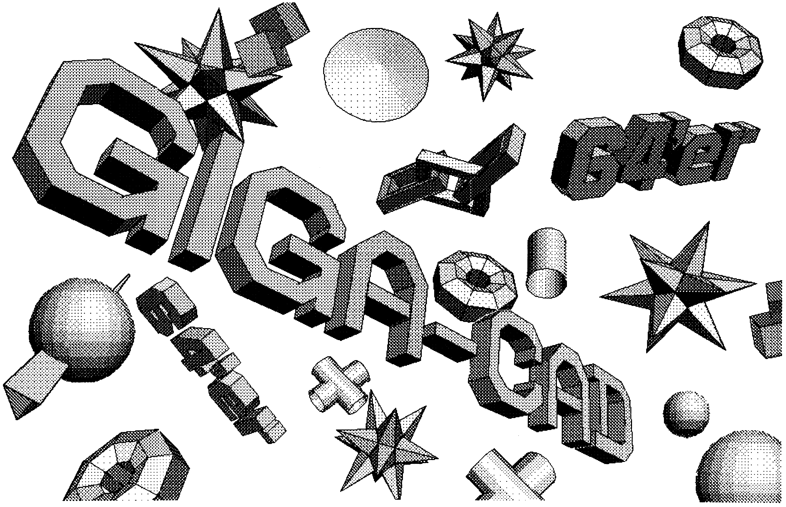
Es hat sicher jeder schon einmal mit etwas neidischem, aber doch begeistertem Blick jene Computer-Grafiken betrachtet, die von so verblüffender Räumlichkeit und Faszination sind, daß C 64-Besitzer nur davon träumen konnten! Lassen Sie sich nun von Giga-CAD in die Dimensionen der 3D-Grafik entführen und gestalten Sie selbst Ihre absolut plastischen Bilder! Ihre Tätigkeit wird damit vom klassischen Reißbrett an den Bildschirm verlagert. Bemerkenswert ist, daß die Konstruktion von Objekten mit sehr geringem Aufwand möglich ist. Es wäre sicherlich ein Alptraum, müßte man die Koordinaten dreidimensionaler Gebilde über die Tastatur eingeben. Deshalb bieten wir Ihnen mit Giga-CAD ein Eingabesystem, mit dessen Hilfe räumliche Körper auf die denkbar einfachste Art bildschirmorientiert konstruiert werden. Hierbei steht dem Anwender eine komfortable Benutzeroberfläche zur Verfügung. Gesteuert wird mit dem Joystick. Die Eingabe erfolgt in der Sprache des Anwenders unter einfacher und leichtverständlicher Benutzerführung. Dieses Konzept öffnet die Tür zu vielen schöpferischen Möglichkeiten während des Entwurfs- und Zeichenprozesses, da es nicht auf reine Grafikbefehle begrenzt ist. So ist das Erstellen von Körpern nicht mehr bittere Vorarbeit zur Berechnung schattierter Grafiken, sondern reines Vergnügen.
Darüber hinaus eröffnen wir Ihnen noch die Möglichkeit, Grafiken mit einer Auflösung von 640*400 beziehungsweise 1000*640 (!) Punkten zu berechnen und auf Ihrem Drucker auszugeben. Hierzu ist dem Programmpaket eine Hardcopy-Routine beigefügt, die es ermöglicht, auf allen grafikfähigen 8-Nadel-Druckern (nach einfacher Anpassung) sämtliche Grafiken, auch in doppelter Dichte, zu erzeugen. Alles in allem handelt es sich hierbei um ein Software-Paket, dessen Konzept aufgrund der Entwicklungsdauer von 6 Monaten als ausgereift bezeichnet werden kann.
Nach dem Laden (Listing 1) befinden Sie sich in einem Menü. Mit dem Joystick (Port 2) können Sie das kreuzförmige Sprite über den Bildschirm bewegen. Am besten befassen wir uns zuerst mit der Eingabeeinheit. Dazu muß der Cursor auf den Begriff »Erstellen« in der Kopfzeile gesetzt und der Feuerknopf gedrückt werden. Hat man sich nun nach entsprechender Aufforderung Gewißheit darüber verschafft, daß sich die Systemdiskette im Laufwerk befindet, drückt man einfach eine Taste und der entsprechende Programmteil (Listing 3) wird von Diskette nachgeladen. Sollten Sie einmal irrtümlich auf »Erstellen« gegangen sein, können Sie Ihre Wahl mit <←> wieder rückgängig machen.
In der Eingabeeinheit ist der Bildschirm in vier Bereiche aufgeteilt (Bild 1). In den drei unbelegten Grafikfenstern werden erstellte Körper in allen drei Projektionen dargestellt. Das Viertel links unten beinhaltet neun 3D-Koordinatensysteme. Mit Hilfe dieser Symbole kann man Gebilde transformieren, also geometrisch am Bildschirm verändern. Das heißt, man kann Objekte um alle drei Achsen drehen und in alle drei Richtungen verschieben, dehnen, stauchen und spiegeln. Am oberen Bildschirmrand befindet sich eine Kopfzeile, die eine Übersicht aller verfügbaren Hauptfunktionen liefert: »Fläche«, »Rotation«, »Form«, »Makro«, »Zeichen«, »Löschen« und »Exit«. Auf diese Punkte wird im folgenden eingegangen.
1. »Fläche«
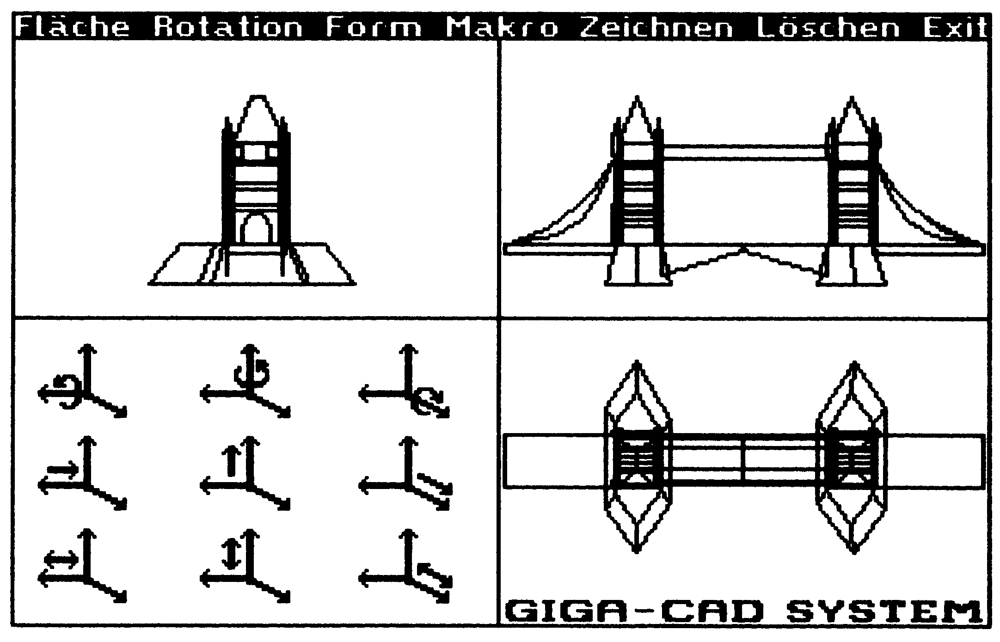
Dieser Menüpunkt dient der Eingabe von einzelnen Flächen, die man zu einem Gesamtgebilde zusammenfügen kann. Aufrufen kann man diese und alle anderen Funktionen, indem man mit dem Cursor-Sprite auf den entsprechenden Begriff in der Kopfzeile fährt und den Feuerknopf drückt. Das wäre hier das Wort »Fläche« in der oberen linken Bildschirmecke. Auf diesem Wege gelangt man auf eine weitere Bildschirmseite (Bild 2). Die Mitte des Bildschirms, die später der Drehachse entspricht, ist mit einem kleinen Kreuz markiert. Um maßstabgetreu konstruieren zu können, ist ein Punktraster mit 10 Pixel Abstand über die Grafik gelegt. Zuerst einmal bewegt man den Cursor auf den ersten Eckpunkt der gewünschten Fläche. Mit dem Feuerknopf wird dieser Punkt fixiert. Alle weiteren Eckpunkte der geplanten Fläche werden ebenso mit dem Cursor markiert und anschließend mit <Feuer> in den Datensatz der behandelten Fläche übernommen. Die Eingabe der Konturen einer Fläche wird mit der »Gummiband«-Methode vorgenommen. Dabei bleibt der Cursor bis zum Ende der Eingabe mit dem Anfangspunkt und dem zuletzt fixierten Eckpunkt durch eine blinkende Linie verbunden. Diese Linie kann man nun, gleich einem Gummiband, ganz nach Wunsch über den ganzen Bildschirm »dehnen« und so die Gestalt der Fläche völlig beliebig entwerfen. So ist gewährleistet, daß es sich bei der Fläche immer um einen geschlossenen Polygonzug handelt. Bei der Konstruktion von Flächen empfiehlt es sich darauf zu achten, daß sich keine Linien überschneiden und so eine weitere Fläche »einschließen«. Die eingeschlossene Fläche würde nämlich später beim Schattieren ausgespart. Freilich kann man durch das bewußte Einsetzen dieser Eigenschaft durchaus brauchbare Effekte erzielen.
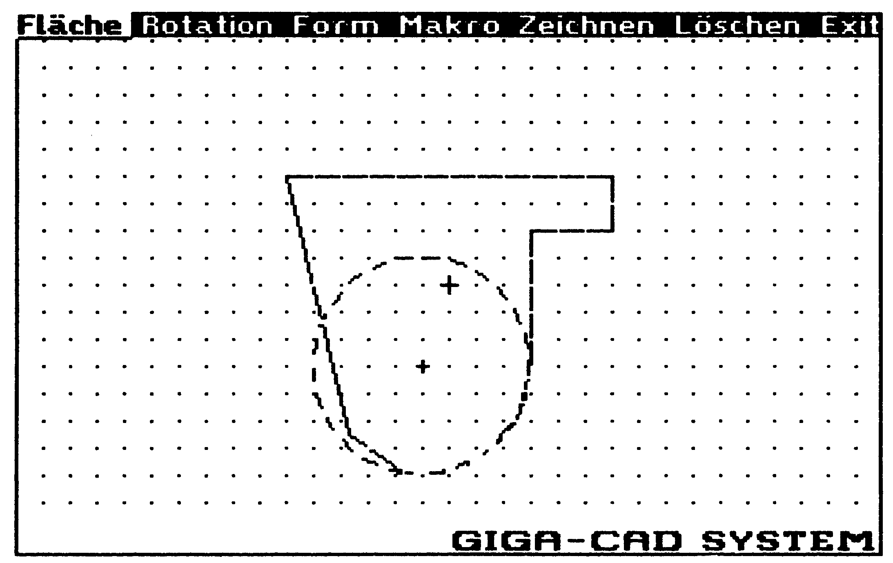
Mit der Taste <←> kann man die Eingabe der Fläche abschließen. Aber zunächst stehen dem Anwender noch folgende leistungsstarke Befehle zur Auswahl:
| <CLR> | – löscht die gesamte Bildschirmseite zur Neueingabe. |
| <←> | – verläßt den »Flächen«-Modus wieder, wenn bisher weniger als drei Eckpunkte fixiert wurden. |
| <L> | – löscht den zuletzt definierten Eckpunkt. |
| <C> | – fügt jederzeit gestrichelte Hilfskreise in die Grafik ein, um Rundungen besser zeichnen zu können (Bild 2). Mit je einem Feuerknopfdruck werden der Mittelpunkt und ein Punkt der Kreislinie festgelegt. Bei erneutem Drücken der Taste <C> wird der Kreis wieder gelöscht. |
So weit, so gut. Hat man nun die Eingabe der Fläche mit <←> abgeschlossen, gelangt man wieder in die 3D-Ansicht. Um die räumliche Lage und Position der Fläche zu veranschaulichen, blinkt nun der gezeichnete Linienzug in allen drei Ansichten und wartet darauf, von Ihnen weiterbearbeitet zu werden (Bild 3). In dem Grafikfenster rechts oben sieht man die Fläche von vorn, darunter von oben, und in dem Viertelbildschirm links oben von der Seite. Mit Hilfe der neun Symbole kann man die Fläche nun in die gewünschte Lage bringen. Man wählt dazu eines der grafischen Symbole mit dem Joystick aus und drückt den Feuerknopf. In Bild 4 wird die Lage der drei Projektionen bezüglich der Achsenkreuze veranschaulicht. Demnach steht die in der Abbildung mit »X« gekennzeichnete Achse senkrecht in dem Viertel »1«. Die Anordnung der weiteren Achsen ist analog aus der Grafik ersichtlich. Das mit dem Cursor angewählte Symbol wird schwarz hinterlegt und die Achsen werden gegebenenfalls eingezeichnet. Der Grad der Verformung wird jetzt per Joystick festgelegt:
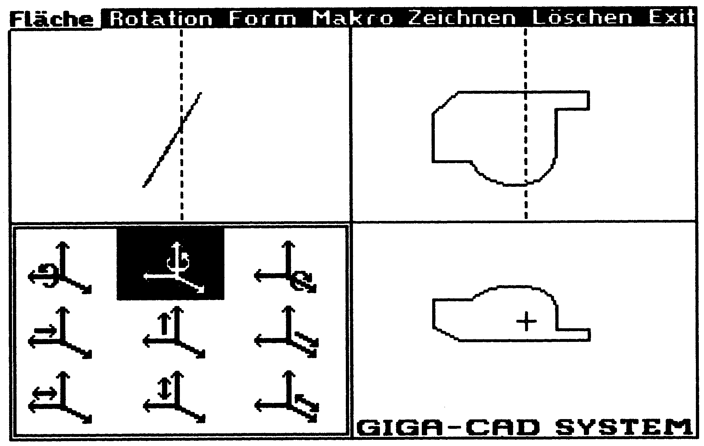
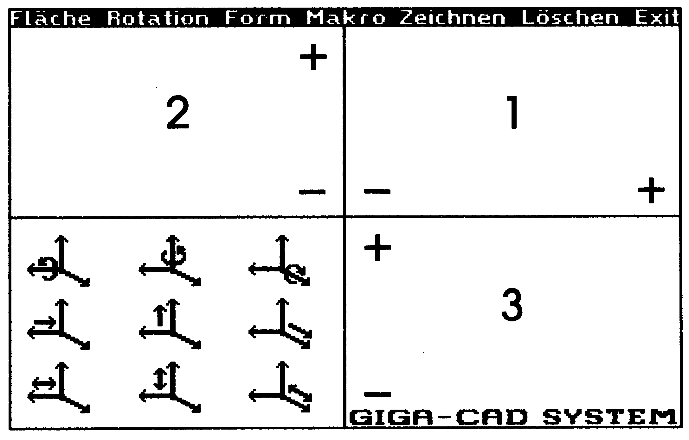
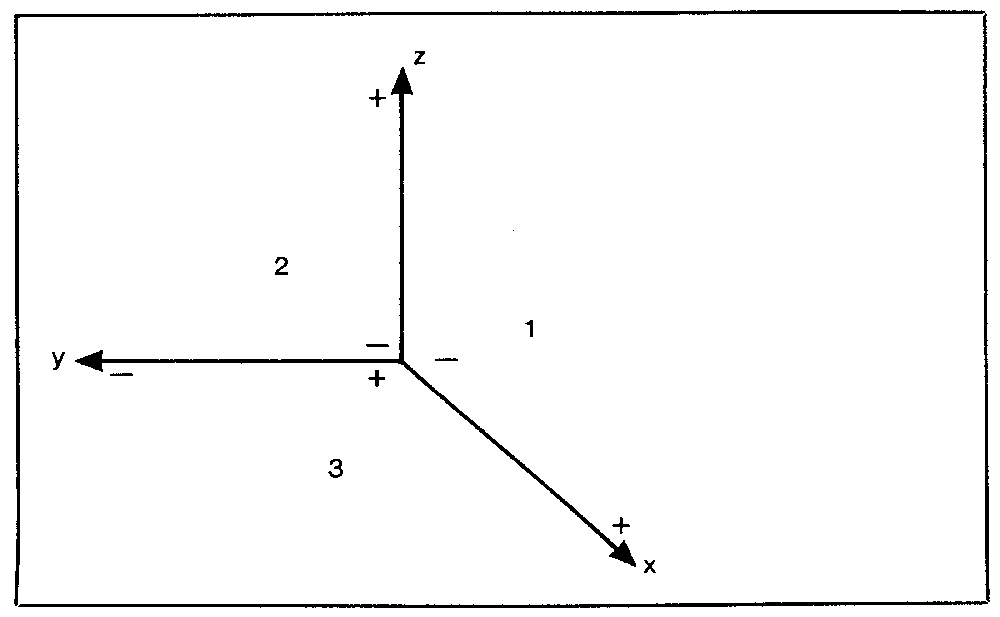
| 1. Drehung (die drei Symbole in der ersten Reihe): | |
| – Joystick nach oben: | Drehung um 15 Grad in Pfeilrichtung |
| – Joystick nach rechts: | Drehung um 1,5 Grad in Pfeilrichtung |
| – Joystick nach unten: | Drehung um 15 Grad entgegen Pfeilrichtung |
| – Joystick nach links: | Drehung um 1,5 Grad entgegen Pfeilrichtung |
| 2. Verschiebung (die drei Symbole in der mittleren Reihe): | |
| – Joystick nach oben: | Verschieben um 20 Einheiten in Pfeilrichtung |
| – Joystick nach rechts: | Verschieben um 2 Einheiten in Pfeilrichtung |
| – Joystick nach unten: | Verschieben um 20 Einheiten entgegen Pfeilrichtung |
| – Joystick nach links: | Verschieben um 2 Einheiten entgegen Pfeilrichtung |
| 3. Dehnung/Stauchung (die Symbole in der untersten Reihe): | |
| – Joystick nach oben: | Dehnung um den Faktor 1,2 |
| – Joystick nach rechts: | Dehnung um den Faktor 1,02 |
| – Joystick nach unten: | Stauchung um den Faktor 1,2 |
| – Joystick nach links: | Stauchung um den Faktor 1,02 |
Die Symbole können auch über die Tasten <1> bis <9> angewählt werden. Sie entsprechen der Anordnung der Koordinaten-Kreuze folgendermaßen:
1 2 3 4 5 6 7 8 9
Drückt man nun eine dieser Tasten, so kann man eine Zahl eingeben, die den Drehwinkel, Verschiebungssummanden, beziehungsweise -faktor festlegt. Beachten Sie bitte, daß sich der Bereich der Koordinaten zwischen -3276,8 und 3276,7 bewegt und so vollkommen übertriebene Vergrößerungen zu einem Absturz führen können. Aber bei einigermaßen sinnvoller Handhabung stößt man nie auf diese Grenzen, da auf dem Bildschirm nur der Bereich von -160 bis 160 darstellbar ist. Aus Geschwindigkeitsgründen wurde hier auf eine Abfrage verzichtet. Generell kann jedoch der Körper über den Bildschirmrand hinausstehen. Überstehende Linien werden dabei automatisch abgetrennt, bleiben jedoch mit ihren Koordinaten weiterhin unverändert im Speicher erhalten. Bei dem Verschiebungssummanden sei darauf hingewiesen, daß diesem genau dieselbe Einheit zugrunde liegt wie dem Punktraster bei der 2D-Eingabe. Einer Verschiebung um den Summanden 10 entspricht also der Abstand von zwei Rasterpunkten. Auf den Viertel-Bildschirmen aber wird die Fläche dann nur noch um fünf Bildpunkte verschoben. An dieser Stelle sei ferner erwähnt, daß man die Fläche durch Eingabe des Faktors -1 spiegeln kann, was manchmal ganz nützlich ist. Am besten probieren Sie alle Umformungen selbst durch, dann bekommen Sie am schnellsten ein Gefühl dafür, wie der bearbeitete Körper reagiert. Auch hier kann man wieder auf einige Sonderbefehle zurückgreifen:
| <+> | – verdoppelt die aktuelle Fläche und ermöglicht die Positionierung des Duplikats. |
| <*> | – verbindet durch Zwischenflächen das Duplikat mit der ursprünglichen Fläche (Bild 5). Damit haben Sie auch schon eine der leistungsstärksten und nützlichsten Funktionen kennengelernt, die von enormer Vielseitigkeit ist. |
| <L> | – löscht die blinkende Fläche und führt zu einem endgültigen Rücksprung ins Eingabehauptmenü. |
| <←> | – fixiert die Fläche in ihrer momentanen Lage und verläßt schließlich den »Flächen«-Modus. |
| <0> | – faßt die Tasten <7> bis <9> zu einer Funktion zusammen und dehnt, beziehungsweise staucht somit die ganze Fläche in alle drei Richtungen um einen einzugebenden Faktor. |
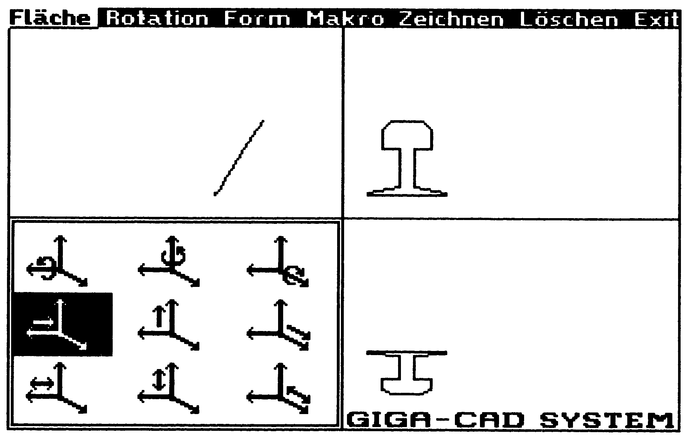
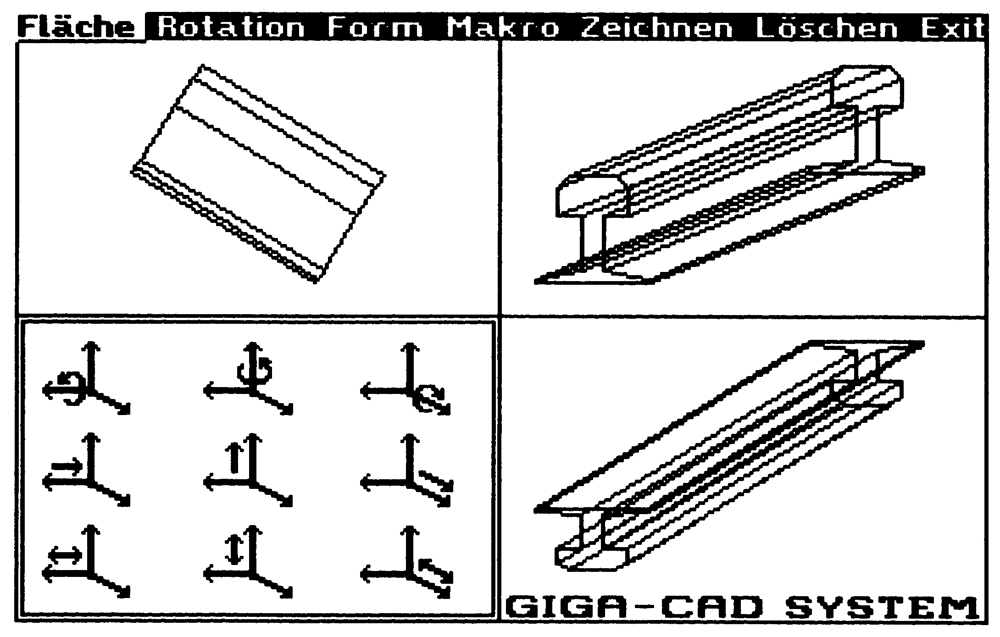
Bei all diesen Befehlen ist es wichtig zu wissen, daß sie nur verfügbar sind, wenn keines der Symbole invertiert ist. Wollen Sie nun beispielsweise unmittelbar nach einer mit dem Joystick durchgeführten Drehung um die Achse zwei den Modus verlassen, müssen Sie zuerst mit <Feuer> die Umformungen vorläufig abschließen. Sollten Sie die Absicht haben, mit dieser Funktion einen Körper aus mehreren Einzelflächen zusammenzusetzen, möchten wir Ihnen einen kleinen Tip zur Arbeitserleichterung geben. Versuchen Sie nicht, Ihre Flächen kompliziert im Raum zu verdrehen. Ein Gebäude zum Beispiel läßt sich viel leichter konstruieren, wenn Sie als Grundriß eine gerade an Stelle einer gekippten Fläche verwenden. So behalten Sie in der Draufsicht immer den Überblick (Bild 1). Erst wenn das Gebilde fertig ist, sollte man es in die gewünschte Lage (mit »Form«) drehen. Durch erneutes Anwählen von »Fläche« kann man diesen Modus ebenso wie mit dem <←> verlassen.
2. »Rotation«
Diese Funktion dient der Erzeugung von Rotationskörpern. Dabei ist nur ein Linienzug einzugeben, der bei Rotation den Rotationskörper beschreibt. Das hört sich zunächst vielleicht komplizierter an als es ist. Auch hier verfügt der Anwender über einen gerasterten Bildschirm, an dessen Unterkante sich zusätzlich eine Skala befindet (Bild 6). Diese Skala entspricht der Rotationsachse. Bei der Eingabe des Linienzugs, der hier jedoch nicht geschlossen sein muß, verfährt man analog zum »Flächen«-Modus. Sie werden auch hier durch entsprechend ähnliche Funktionen unterstützt, die mit den Tasten <CLR/HOME>, <←>, <L> und <C> aufgerufen werden. Ist die Eingabe abgeschlossen, drückt man einfach die <←>-Taste. Jetzt folgt die Abfrage des Computers, mit wievielen Facetten (pro Polygonabschnitt) der Körper erstellt werden soll. Damit diese Größe etwas anschaulicher wird, wollen wir uns zunächst mit einem einfachen und bildhaften Beispiel befassen.
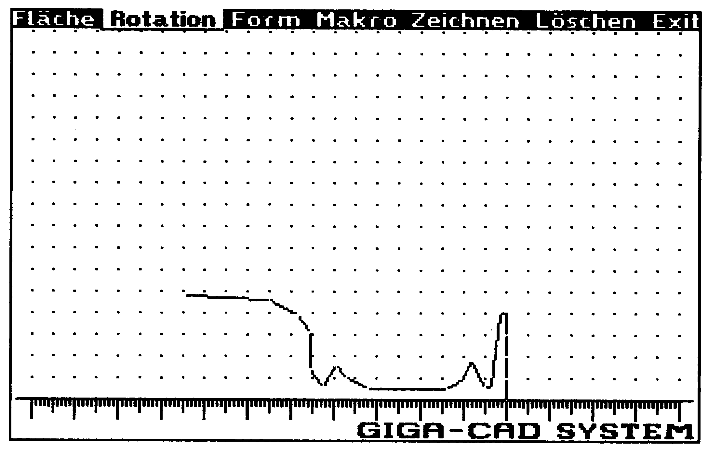
Beispiel:
Möchten Sie eine Pyramide mit fünfeckigem Grundriß konstruieren, so ist nur das Zeichnen einer schrägen Linie erforderlich, deren Eckpunkt die Achse berühren muß. Geben Sie jetzt auf die Frage »Anzahl der Facetten ?« einfach <5> ein. Sind die restlichen Eingaben entsprechend abgeschlossen, blinkt kurz darauf eine fünfeckige Pyramide auf dem Bildschirm. Als nächstes fragt der Computer Sie nach dem Rotationswinkel. Sagt Ihnen die Vorgabe von 360 Grad zu, drücken Sie einfach die RETURN-Taste. Wollen Sie jedoch zum Beispiel eine Halbkugel erstellen, so geben Sie statt 360 Grad nur 180 Grad ein. Die nächste abgefragte Größe ist anfangs noch nicht von Interesse und wird erst bei der Schattierung wichtig. Daher verzichten wir an dieser Stelle auf nähere Erläuterungen. Vorerst gibt man am besten, wie vom Computer vorgeschlagen, <0> ein.
Abschließend kann man noch den Makro-Namen eingeben, unter dem der Teil-Körper intern vom Computer verwaltet wird. Das hat den Vorteil, daß ein Rotationskörper immer wieder aufgerufen und eingefügt werden kann.
Wenige Sekunden später blinkt der berechnete Rotationskörper in der 3D-Ansicht (Bild 7) und kann genauso wie eine einzelne Flächen weiterbearbeitet werden, wobei man vollkommen analog verfährt. Ebenso kann man mit <+> Gebilde duplizieren, mit <L> löschen und mit <0> den Gesamtkörper verzerren. Die Funktion <*> entfällt zwar hier, aber dafür gibt es in diesem Modus eine andere Besonderheit. Drückt man die Taste <F1>, so kann man mehrere Umformungen zusammenfassen. Diese Funktion wird mit einem dunkelblauen Rahmen bestätigt. Führt man jetzt Drehungen, Verschiebungen und Dehnungen durch, so bleibt die Lage des Objekts unverändert, intern jedoch berechnet der Computer die neuen Koordinaten, zeichnet aber den Körper nicht erneut auf den Bildschirm. Drückt man wiederum <F1>, so werden die Umformungen »sichtbar« und der Rahmen nimmt wieder seine ursprünglich hellblaue Farbe an. Rechnet der Computer, verschwindet der doppelte Rand um die Symbole, der die Bereitschaft zur weiteren Eingabe anzeigt. Hat man schließlich den Körper in die gewünschte Position und Lage gebracht, wird der Modus durch <←> oder durch Aufrufen von »Rotation« in der Kopfzeile verlassen. Damit ist die Eingabe von Rotationskörpern beendet.
3. »Form«
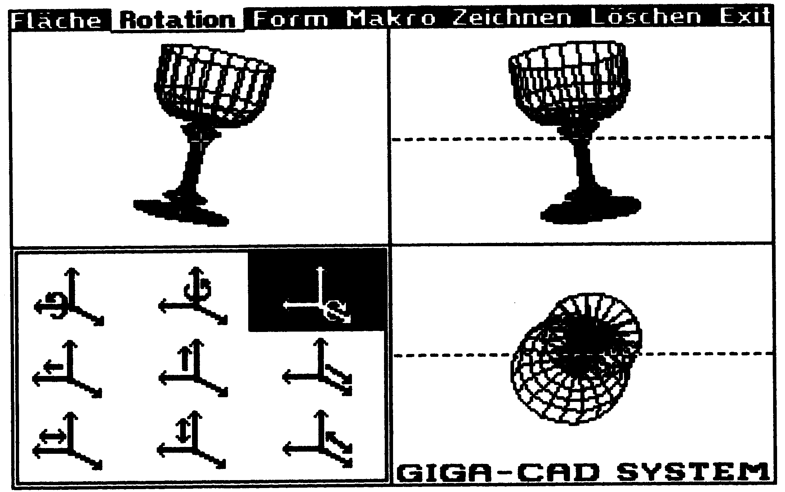
Dieser Menüpunkt eröffnet Ihnen die Möglichkeit, mit dem gesamten auf dem Bildschirm befindlichen (also nicht nur mit dem gerade blinkenden) Körper Translationen durchzuführen. Das geschieht vollkommen analog mit den Symbolen und den Tasten <1> bis <9> und <0>. Auch hier kann man wieder mit <F1> Umformungen zusammenfassen, was zum Teil bei komplexen Körpern einen erheblichen Geschwindigkeitsgewinn mit sich bringt.
4. »Makro«
Ein einmal konstruiertes geometrisches Gebilde, das im Rahmen der 421 möglichen Flächen aus beliebig vielen Einzelflächen zusammengesetzt sein darf, kann mit einem Namen versehen werden. Ein solches Gebilde wird »Makro« genannt. Unter Angabe des Namens kann man ein Makro beliebig oft erneut auf den Bildschirm holen. Somit kann der Anwender seinen immer wiederkehrenden Anforderungen entsprechend eine Makro-Bibliothek anlegen. Hat man sich zum Beispiel auf Innenarchitekur »spezialisiert«, wäre es sinnvoll, einen Stuhl nur einmal einzugeben und ihn dann weiterhin immer wieder zur Verfügung zu haben. Vom Benutzer einmal definierte Bibliotheken bleiben im System und stehen wirklich problemlos zum wiederholten Aufruf bereit. Die enorm universellen Makro-Operationen, die in diesem Programm verfügbar sind, können sich durchaus neben denen professioneller CAD-Programme sehen lassen. Sie werden alle von einem Menü angesteuert, das nach dem Anwählen von »Makro« erscheint.
A. – Makro laden: Makros, die bereits erstellt und auf Diskette abgelegt wurden, lassen sich mit dieser Option unter Angabe des Filenamens laden und in das Gesamtgebilde einfügen. Existiert bereits ein gleichnamiges Makro im Speicher, so fordert der Computer Sie zur Eingabe eines neuen Namens auf.
B. – Makro speichern: Nach Aufrufen dieses Menüpunktes können Sie Makros, die Sie erstellt haben und die sich im Speicher befinden, auf Diskette speichern, um sie zu einem späteren Zeitpunkt neu zu laden und wieder zu verwenden. Zum Speichern muß der Name, unter dem das Makro verwaltet wird, und der Filename, unter dem es auf Diskette abgelegt werden soll, eingegeben werden.
C. – Diskettenkommando senden: Hier kann der Anwender Diskettenoperationen durchführen. Soll beispielsweise das Makro »Stuhl« auf Diskette gelöscht werden, so muß man »S:MA.STUHL <RETURN>« eingeben. Hier sei zum leichteren Verständnis bemerkt, daß Makros auf Diskette mit einem »MA.« vor dem Namen gekennzeichnet sind, der jedoch weder beim Laden noch beim Speichern einzugeben ist.
D. – Makros auf Diskette: Nach Betätigung der Taste <D> gibt der Computer die Namen aller Makros aus, die sich auf der eingelegten Diskette befinden.
E. – Makros im Speicher: Die Namen aller im Speicher befindlichen Makros werden, vorausgesetzt es existieren welche, auf dem Bildschirm gelistet.
F. – Makro erstellen: Arbeiten Sie gerade an einem Objekt und Sie gelangen zu der Erkenntnis, daß Sie ein noch nicht erstelltes Makro benötigen, so rufen Sie einfach diesen Menüpunkt auf. Nach Eingabe eines entsprechenden Namens ist der Bildschirm zur Konstruktion des Makros gelöscht, ohne daß jedoch Ihr bereits geschaffenes Kunstwerk verlorengeht. Der Begriff »Makro« ist invertiert und der Anwender kann mit den Funktionen »Fläche«, »Rotation«, »Form«, »Zeichnen«, »Makro laden« und »Makro einfügen« das gewünschte Objekt »zusammenbasteln«.
G. – Makro einfügen: Sind Sie im »Makro erstellen«-Modus, können Sie das eben erstellte Makro wieder in ihren Gesamtkörper integrieren, indem Sie auf die Frage »Makro-Name ?« den Namen des neuen Makros eingeben. Während das bisher Erstellte auf dem Bildschirm erscheint, blinkt das neue Makro und kann genauso wie ein Rotationskörper, unter Verwendung derselben Zusatzfunktionen wie <+>, <L>, <F1> und <←> eingefügt werden.
Man kann aber auch jederzeit Makros, die bereits im Speicher existieren unter Angabe ihres Namens aufrufen und erneut verwenden. Hier muß jedoch für das Duplikat ein neuer Name eingegeben werden, damit die Makros weiterhin unterscheidbar sind.
H. – Alles Erstellte als Makro: Wollen Sie in Zukunft das gesamte im Speicher befindliche Gebilde als Makro behandeln, müssen Sie diesen Menüpunkt wählen und einen Namen für dieses Makro eingeben. Daraufhin wird der ganze Speicherinhalt unwiderruflich zu einem Makro verschmolzen.
Auch das Makromenü kann mit <←> wieder verlassen werden.
5. »Zeichnen« – dreidimensional
Dieser Menüpunkt eröffnet dem Benutzer die Möglichkeit, direkt in der 3D-Ansicht zu zeichnen und zu konstruieren! Auch hier wird die maßstabgetreue Arbeit durch ein Punktraster erleichtert (Bild 8). Jetzt blinkt auf allen 3 Grafik-Fenstern ein Cursor in Form eines Kreuzes. Man kann mit »Joystick vor und zurück« den Cursor auf dem Viertel rechts oben hinauf und hinunter bewegen. Auf den anderen Bildschirmteilen bewegt sich der Cursor entsprechend, jedoch nur eindimensional. Die fehlende Dimension erhält man, wenn man zusätzlich den Feuerknopf drückt. Somit kann man das Fadenkreuz auch in der »Tiefe« vor und zurück bewegen. Ansonsten wird bei »Zeichnen« vollkommen analog zu »Fläche« verfahren. Der hauptsächliche Unterschied liegt darin, daß hier die Fläche nicht mehr in der 3D-Ansicht in das Objekt integriert werden muß, da sie automatisch am richtigen Platz ist. Der für Sie wichtigste Unterschied dürfte der sein, daß die Eckpunkte hier mit <↑> fixiert werden, da der Feuerknopf anderweitig belegt ist! Zur Auswahl stehen wieder folgende Befehle:
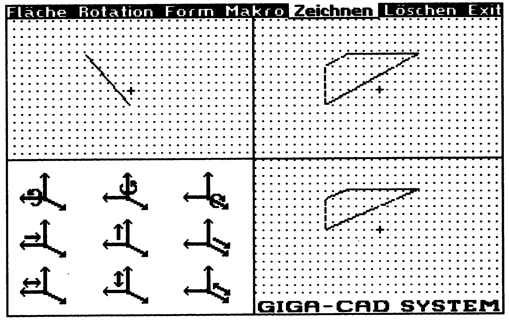
| <CLR> | – löscht die soeben bearbeitete Fläche und stellt die Ausgangsposition wieder her. |
| <L> | – löscht den zuletzt fixierten Punkt mit den dazugehörigen Linien. |
| <+> | – fixiert die gesamte Fläche endgültig und ermöglicht die Eingabe einer weiteren Fläche in der 3D-Ansicht. |
| <C> | – dient dem Einfügen von gestrichelten Hilfskreisen. |
| <←> | – fixiert die Fläche, wenn sie mehr als zwei Eckpunkte hat, und verläßt den »Zeichnen«-Modus. |
| <↑> | – fixiert einen Eckpunkt an der momentanen Cursorposition. |
| <F> | – führt zu einem Sprung aus dem »Zeichnen«-Modus in den »Fläche«-Modus. Die Fläche ist nun wieder aus der 3D-Ansicht herausgelöst und blinkt, um neu positioniert und eingefügt zu werden. |
Diese Funktion ist von großem Nutzen, wenn Sie Flächen eingeben wollen, deren Lage oder Form sehr kompliziert ist. Die Taste <←> führt wieder zum Rücksprung ins Eingabehauptmenü.
6. »Löschen« – problemlose Korrektur
Eines der wichtigsten Leistungsmerkmale bei CAD-Programmen ist die Fähigkeit, Fehleingaben zu korrigieren und einzelne Bestandteile eines Objektes sowie deren Lage erneut zu ändern. Denn früher oder später will jeder Anwender nachträglich noch etwas verändern oder verbessern und Eingaben rückgängig machen. Leider bleibt so etwas bei vielen Programmen nur ein Wunschtraum. Das so mühsam Konstruierte muß neu eingegeben werden. Anders dagegen liegen die Dinge bei »Giga-CAD«: Dem Anwender wird ein umfangreicher Katalog von allen nur erdenklichen Manipulationen geboten.
Man braucht dazu einfach nur den Menüpunkt »Löschen« in der Kopfzeile mit dem Cursor anzuwählen und erhält durch ein übersichtliches Menü eine Auswahl der Grund-Optionen.
A. – Flächen durchblättern: Der Grafikbildschirm mit den drei Projektionen wird wieder eingeschaltet und eine der Flächen beginnt zu blinken. Mit den Tasten <+> und <-> kann man zyklisch vor- und zurückblättern, das heißt, nach der letzten Fläche kommt wieder die erste. Drückt man nun zum Beispiel < + >, fängt die entsprechend der Reihenfolge nächste Fläche an zu blinken. Die »nächste« Fläche ist also immer die Fläche, die nach der momentanen Fläche konstruiert wurde. Sind Sie schließlich bei der gewünschten Fläche angelangt, die es zu ändern gilt, können Sie mit den jeweiligen Tasten folgende Funktionen aufrufen:
| <L> | – löscht die blinkende Fläche im Speicher und zeichnet das Gebilde anschließend erneut ohne die gelöschte Fläche. Nun blinkt die nächste Fläche zur weiteren Bearbeitung. |
| <V> | – ändert die Verbindungsvorschrift einer Fläche. Es sind dafür nur die Zahlen <0> bis <2> zugelassen, doch darauf wird noch ausführlich eingegangen. |
| <←> | – verläßt den »Löschen«-Modus. |
| <↑> | – führt zu einem Sprung in den »Flächen«-Modus, so daß die Fläche neu positioniert werden kann. |
Auch hier kann man mit der Taste <F1> Befehle zusammenfassen, was die Arbeitszeit erheblich verkürzt. Der Nachteil liegt jedoch darin, daß dann gelöschte Flächen weiterhin auf dem Bildschirm bleiben. Aber beim Durchblättern werden diese Flächen natürlich übergangen, da sie ja intern nicht mehr existieren. Drückt man nochmals <F1>, so wird das Gebilde ohne die gelöschten Flächen wieder auf den Bildschirm gezeichnet.
B. – Makros durchblättern: Um ein ganzes Makro zu eliminieren, benötigt man diesen Menüpunkt. Die Makros können auch hier mit <+> und <-> durchgeblättert werden, ebenso wie in der gerade beschriebenen Routine für Flächen. Die Taste <F1> hat hier keine Funktion. Alle anderen Funktionen sind identisch zu »Flächen durchblättern«. Deshalb wird hier auf eine nähere Beschreibung verzichtet.
C. – Bekanntes Makro löschen: Wollen Sie nun ein Makro löschen, dessen genauen Namen Sie kennen, sollten Sie diese Funktion aufrufen und den Namen des Makros eingeben. Daraufhin beginnt das Makro wieder zu blinken und man kann es, wenn man sich wirklich sicher ist, mit <L> löschen. Liegen Sie um wenige Makros daneben, besteht weiterhin die Möglichkeit, das richtige Objekt mit <+> und <-> auszuwählen. Zur weiteren Bearbeitung stehen wiederum dieselben Befehle wie im letzten Menüpunkt zur Verfügung.
D. – Alles löschen: Bestätigt der Anwender nach Aufruf dieser Option die Frage »Sind Sie sicher ?« mit <J>, so wird das gesamte im Speicher befindliche Gebilde endgültig gelöscht. Es gibt keine Möglichkeit mehr, das alte Objekt zu rekonstruieren, es sei denn, man hat es bereits gespeichert. Der Bildschirm steht währenddessen zur Neueingabe bereit.
E. – Verbindungsvorschrift: Die aktuelle Verbindungsvorschrift wird in alle Flächen kodiert, die man konstruiert. Um diese laufende Verbindungsvorschrift zu ändern, wählt man diesen Menüpunkt und kann dieser Größe einen neuen Wert (0 bis 2) zuordnen. Die Verbindungsvorschrift, die bei Rotationskörpern eingegeben wird, hat auf diesen Wert ebensowenig Einfluß wie das Ändern einer Verbindungsvorschrift beim Durchblättern von Makros und Flächen. Will man nun beispielsweise zukünftig alle einzeln erstellten Flächen mit der Verbindungsvorschrift <2> konstruieren, so kann man in diesem Menü die Taste <E> drücken und daraufhin eine <2> eingeben. Dann werden alle weiteren einzeln erstellten Flächen mit der Verbindungsvorschrift <2> vom System übernommen.
Mit der <←>-Taste gelangt der Benutzer wieder in das Grafikhauptmenü.
7. »Exit«
Schließlich gilt es in diesem Programmteil noch die letzte und kürzeste Funktion anzusprechen. Mit »Exit« gelangt man in ein übergeordnetes Menü, mit dessen Hilfe man Körper weiterbearbeiten kann. Dazu müssen Sie jedoch erst die Systemdiskette einlegen und dies dem Computer mit einem Tastendruck bestätigen. Selbstverständlich kann man noch vor dem Ladevorgang mit der Taste <←> in das Menü zurückkehren. Sollte sich statt der Systemdiskette eine andere Diskette im Laufwerk befinden oder ein Diskettenfehler auftreten, wird der Ladevorgang abgebrochen und das Eingabemenü erscheint wieder.
Die vierte Dimension – Filme erzeugen
Soeben haben wir den Programmteil kennengelernt, der ausschließlich der Generierung von Körpern dient. Nun werden wir uns den vielen Funktionen der Bearbeitungseinheit zuwenden. Neben der Möglichkeit, die erstellten Gebilde in mehreren Größen darzustellen, schufen wir zusätzlich noch eine Option, um bewegte Grafiken, sprich Filme, zu erzeugen. Somit dringt man in die geheimnisumwitterte vierte Dimension vor und hat hier wieder eine ganze Reihe von Manipulationsmöglichkeiten, um Körper in zeitlicher Abhängigkeit zu verformen und so einen kaum noch zu überbietenden plastischen Effekt zu erzielen. Auf diese Weise wird es Ihnen erstmals möglich, bewegte »Hidden-Line«-Grafiken wie von Geisterhand auf den Bildschirm zu zaubern, ohne auch nur eine Minute Ihrer Zeit dafür zu opfern, wenn Sie einmal das Gebilde geschaffen haben. Auch in diesem Programmteil ist durch zahlreiche Systemkommandos eine der wesentlichsten Eigenschaften von »Giga-CAD« verwirklicht. Es wird ebenso wie in der Eingabeeinheit ein Optimum an Benutzerfreundlichkeit erreicht. Dieser Programmteil (Listing 2) steht dem Anwender sofort nach dem Laden zur Verfügung.
Zuerst einmal fällt der Unterschied zum Eingabesystem in der grafischen Darstellung auf: Das Gebilde wird nicht mehr in allen drei Projektionen dargestellt (Bild 9). Man sieht nun die Konstruktion in der Vorderansicht (Bild 10). Der Bildschirm ist nicht mehr in vier Grafikfenster aufgeteilt, sondern das Gebilde wird doppelt so groß dargestellt und zwar so, daß es den ganzen Bildschirm zur Darstellung beansprucht. Der Aufruf sämtlicher Kommandos erfolgt in gewohnter Weise über die Kopfzeile, die jedoch nun andere Befehle beinhaltet. Zu lesen sind die Funktionen »Erstellen«, »Form«, »Disk«, »Zoom«, »Darstellen«, »Zusätze«, »Modi«.
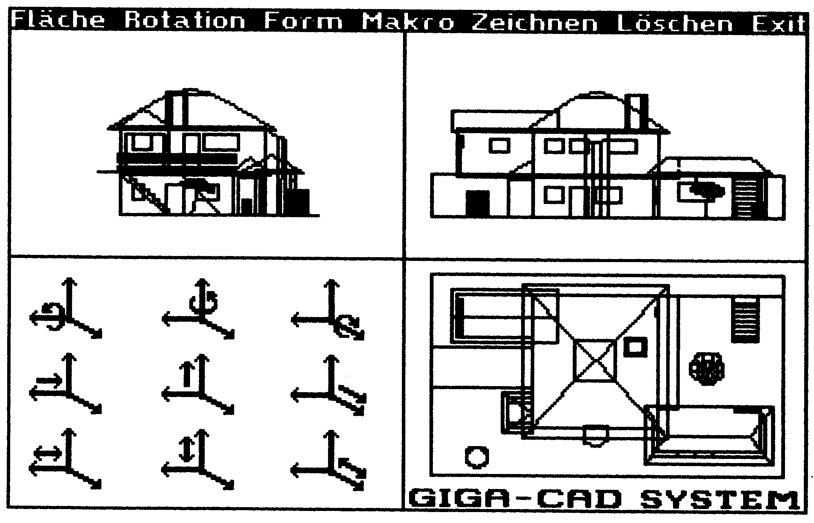
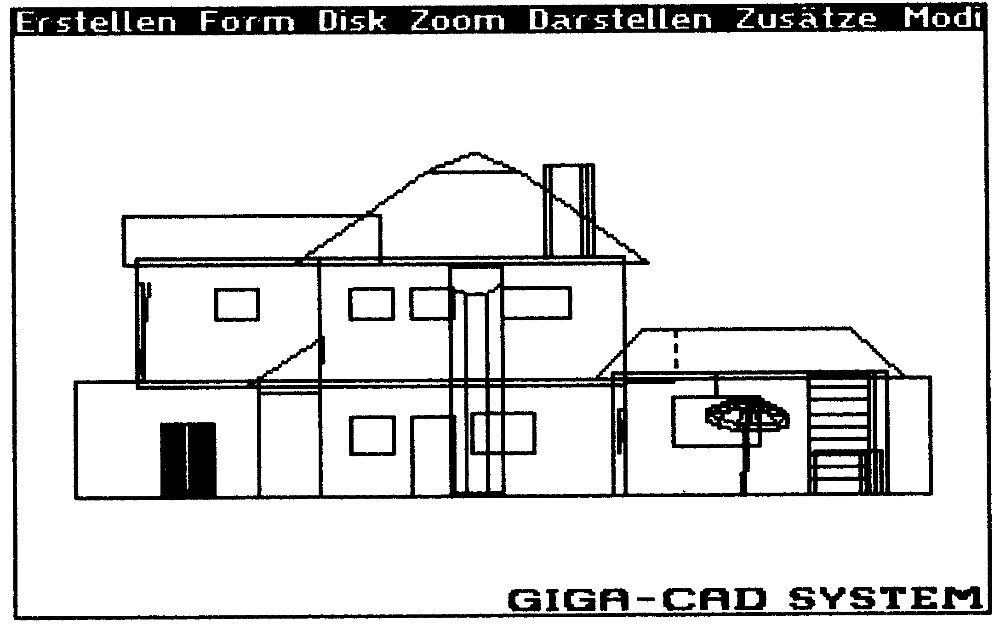
1. »Erstellen«
Mit dieser Funktion können Sie, wie bereits angesprochen, in die Eingabeeinheit gelangen. Diese wird vom Computer von Diskette nachgeladen.
2. »Form«
Diese Funktion entspricht exakt jedem Detail der gleichnamigen Funktion in der Eingabeeinheit. Hier wird aber das Grafikfenster mit den Symbolen erst nach Aufruf dieses Menüpunktes in die Grafik eingeblendet (Bild 11).
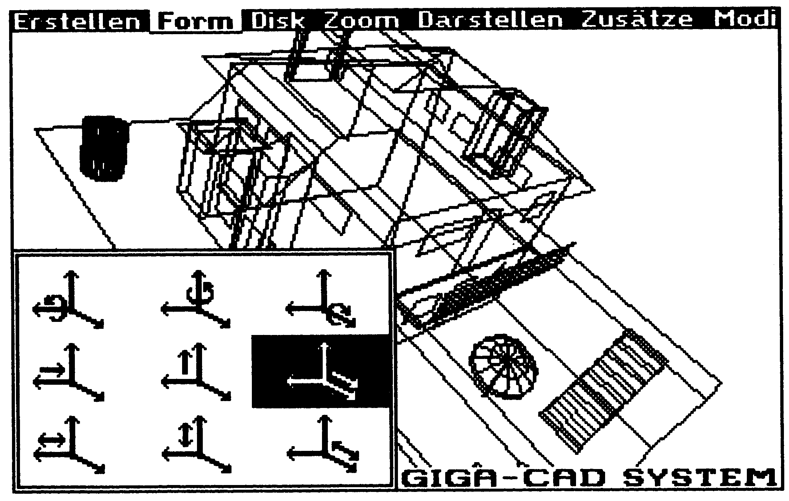
3. »Disk«
Hinter diesem Begriff in der Kopfzeile verbirgt sich ein weiteres Menü, das dem Benutzer erlaubt, sämtliche Diskettenoperationen durchzuführen. Zur Auswahl stehen folgende Optionen:
A. Objekt laden: Mit diesem Menüpunkt ist es möglich, auf Diskette gespeicherte Körper zu laden. Dazu braucht man nur den Dateinamen (natürlich ohne »OB.«) einzugeben. Beachten Sie dabei jedoch stets, daß davon das momentan im Speicher befindliche Gebilde überschrieben wird und somit nicht mehr zur Verfügung steht. Deshalb sollten Sie Ihr Objekt zuerst speichern.
B. Objekt speichern: Diese Funktion speichert die gesamte Konstruktion, die sich im System befindet, zusammen mit allen Makros auf Diskette ab. So kann sie jederzeit mit dem zuvor erläuterten Kommando geladen werden.
C. Diskettenkommando senden: Auch bei diesem Menüpunkt besteht kein Unterschied zu dem Befehl mit dem gleichen Namen im Makromenü.
D. Directory anzeigen: Drückt man die Taste <D>, so wird der Disketteninhalt auf dem Bildschirm ausgegeben. Durch Tastendruck gelangt man wieder in das Diskettenmenü.
E. Grafik laden: Grafiken, die auf Diskette mit einem »PI.« vor dem Namen versehen sind, können, freilich ohne »PI.«, zum Betrachten geladen werden. Man gelangt daraufhin in einen besonderen Modus, der durch einen hellgrauen Rahmen gekennzeichnet wird. Folgende Tasten sind jetzt mit den jeweiligen Funktionen belegt:
| <1> | – schaltet um auf Bildschirm 1. |
| <2> | – schaltet Bildschirm 2 ein, auf dem sich die geladene Grafik befindet. |
| <M> | – wechselt zwischen Multicolor- und hochauflösender Darstellung. |
| <F1>, <F7> | – verändern die Strich- beziehungsweise Hintergrundfarbe, wobei der Durchgang zyklisch ist. |
| <F2>, <F8> | – schalten noch einmal die jeweils vorhergehende Farbe für den Körper und Hintergrund ein. |
| <F3>, <F5> beziehungsweise <F4>, <F6> | dienen der Veränderung der zweiten und dritten Multicolorfarbe. Dabei »blättern« die »geSHIFTeten« Funktionstasten wieder rückwärts. |
| <R> | – umrandet die Grafik mit einem dünnen Rahmen. |
| <S> | – ermöglicht es, die Grafik zu speichern. Hierzu ist nur die Angabe des Filenamens erforderlich. |
| <←> | – führt zu einem Rücksprung aus diesem Modus, woraufhin der Rahmen wieder hellblau wird. |
F. Grafik speichern: Nach Aufruf dieses Menüpunktes kann man Grafiken speichern. Dazu muß man die Nummer des Grafikbildschirms und den Filenamen eingeben.
4. »Zoom«
Weil die Auflösung des C 64 nicht überragend ist, ist es oft sehr von Nutzen, wenn der Benutzer Details aus der Nähe betrachten kann. Diesen Wunsch erfüllen Ihnen folgende Befehle:
A. – Zoomen des Objekts: Diese Funktion ermöglicht es, einen beliebigen Ausschnitt der Grafik zu selektieren und zu vergrößern. Dabei geht man folgendermaßen vor:
Fahren Sie einfach mit dem Cursor auf die linke obere Ecke des erwünschten Ausschnittes und fixieren Sie diese mit dem Feuerknopf. Bewegt man nun den Cursor an eine andere Stelle, zieht dieser einen blinkenden Rahmen hinter sich her. Somit kann der Anwender ein Fenster in der Grafik definieren, das dann vergrößert wird. An dieser Stelle ist anzumerken, daß der Rahmen sich nicht deformieren läßt. Das Verhältnis der Seitenkanten bleibt immer gleich. Führt man den Cursor ein Stück nach unten, bewegt er sich automatisch etwas nach rechts und umgekehrt. Damit ist gewährleistet, daß das Gebilde nie seine Form verliert und »zerquetscht« wird.
Um nun die Eingabe des Ausschnittes zu beenden, bewegt man den Cursor auf den rechten unteren Eckpunkt des Ausschnittes und drückt wiederum den Feuerknopf. Hat man nun auf diese Weise den Ausschnitt ausgewählt, wird das Rahmenblinken beendet. Nach einer kurzen Wartezeit erscheint der nunmehr vergrößerte Ausschnitt auf dem Bildschirm. Das »Zoomen« läßt sich fast beliebig oft wiederholen.
Haben Sie erst den ersten Eckpunkt des Rahmens fixiert und möchten Sie diesen anders positionieren, brauchen Sie nur <L> zu drücken. Mit der Taste <←> kann man den »Zoom«-Modus verlassen.
B. – Originalgröße: Ist man nun des Vergrößerns überdrüssig geworden, kann man mit diesem Menüpunkt die Ausgangsgröße wieder herstellen. Der Körper wird dann in seiner ursprünglichen Größe auf dem Bildschirm dargestellt.
C. – Optimaler Ausschnitt: Das Gebilde wird automatisch auf dem Bildschirm optimal dargestellt, so daß es den Bildschirm ganz ausfüllt. Diese Optimierung wird vom Computer berechnet und der jeweilige Ausschnitt in der Grafik mit einem Rahmen markiert (Bild 12). Kurz darauf erscheint die vom Computer errechnete neue Grafik auf dem Bildschirm (Bild 13). Auch hier kann man wieder per Hand »Zoomen« und die Originalgröße mit der zuvor besprochenen Option wiederherstellen.
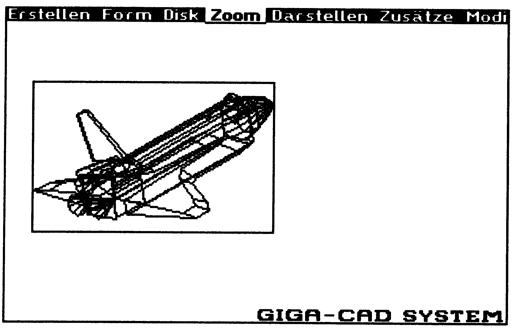
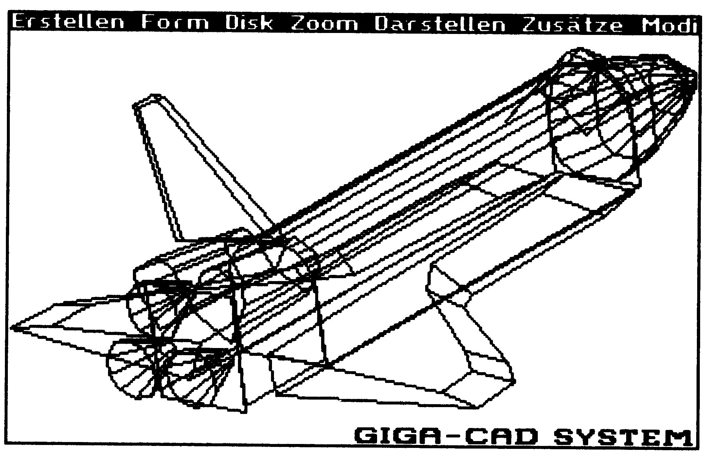
D. – Betrachten der Grafik: Mit dieser Funktion kann man Grafiken optional sowohl auf dem ersten als auch auf dem zweiten Bildschirm betrachten. Hier befindet man sich wiederum in dem bereits bei »Grafik laden« angesprochenen Modus.
E. – Zentrieren: Dieser Befehl verschiebt das räumliche Gebilde stets so, daß es sich genau in der Mitte des Bildschirms befindet. Dabei nimmt es automatisch seine Originalgröße wieder an und Ausschnittsvergrößerungen werden dabei rückgängig gemacht. Es ist unbedingt zu empfehlen, vor dem Erstellen von Filmen das Objekt zu zentrieren, da man sonst Gefahr läuft, daß sich das Gebilde aus dem Bildschirm dreht und zeitweise nicht mehr sichtbar ist.
Mit der <←>-Taste kehrt man zurück in das Hauptmenü.
5. »Darstellen«
Dieser Menüpunkt dient der computergestützten Berechnung von Grafiken, wobei die Kopfzeile ausgeblendet bleibt. Damit ist es Ihnen möglich, Gebrauchsgrafiken für Ihren spezifischen Bedarf und Ihren persönlichen Anforderungen entsprechend zu erstellen. Hat man den Hidden-Line-Modus eingeschaltet, während man diesen Menüpunkt aufruft, wird eine eigens für »Giga-CAD« entwickelte Routine (Listing 4) von Diskette nachgeladen. Dies geht in der gewohnten Art und Weise vor sich. Währenddessen ist die Rahmenfarbe hellgrau. Lassen Sie sich nicht davon irritieren, wenn während der Berechnung von Hidden-Line-Grafiken das Floppylaufwerk zu arbeiten beginnt, denn der Computer speichert einige Systemdaten auf Diskette. Aus diesem Grund sollten Sie Ihre Diskette im Laufwerk lassen. Nur durch Zwischenspeichern der aktuellen Daten hat der Computer genügend Speicherplatz zur Verfügung, um alle Operationen zu optimieren und so die größtmögliche Geschwindigkeit zu erreichen. Alle vom Computer gesteuerten Diskettenoperationen sind mit einer umfassenden Diskettenfehlerbehandlung gesichert. Gehen Ihnen die Systemdaten verloren, so steht auch das Objekt nicht mehr zur Verfügung. Alle weiteren Berechnungen müssen daher vom Computer abgebrochen werden und das Programm kehrt ins nächste Menü zurück. Ist jetzt eine solche Grafik fertig, wird erneut die Bearbeitungseinheit geladen. Auch diesmal befindet sich der Benutzer wieder in dem bereits angesprochenen Modus, in dem er zwischen beiden Bildschirmen mit <1> und <2> umschalten, mit <M> Multicolor ein- und ausschalten und mit <S> Grafiken speichern kann. Die Funktionstasten dienen wieder der Manipulation der Bildschirmfarben.
Bei Darstellungen ohne Hidden-Line stehen die Dinge ähnlich. Lediglich werden diesmal keine Werte auf Diskette gespeichert und auch kein weiterer Programmteil von Diskette geladen.
6. »Zusätze«-Sonderfunktionen
Was man kaum für möglich hält, ist mit diesem Programmpunkt realisierbar:
Die durch die Grafikauflösung des C 64 gesetzten Grenzen werden gesprengt und Bilder mit einer Auflösung von sage und schreibe 1000*640 Punkten möglich. Auch die Fähigkeit, Filme mit 24 Bildern pro Sekunde zu berechnen, läßt aufhorchen. Sie brauchen sich nur für einen der folgenden Menüpunkte entscheiden, und schon steht Ihren Wundergrafiken (von der Berechnungszeit abgesehen) nichts mehr im Wege.
A. 4-fache Auflösung: Es werden Bilder in der gewählten Darstellungsart berechnet und mit einer Auflösung von 640*400 Punkten berechnet. Dabei geht der Computer intern folgendermaßen vor: Zuerst muß der Name der Grafik angegeben werden, der dann dem Filenamen auf der Diskette entspricht. Nun darf die Diskette während des Rechenprozesses nicht mehr gewechselt werden. Daraufhin werden je zwei Bilder gleichzeitig berechnet. Diese enthalten, seitlich aneinandergefügt und vergrößert, die obere Hälfte der Grafik. Zwischen beiden Grafiken wird ständig hin- und hergeschaltet, um den Zeichenvorgang für den Anwender kontrollierbarer und überschaubarer zu gestalten. Sind beide Grafiken fertig, speichert der Computer sie selbständig und versieht sie mit einem »HV.« vor und der Nummer der Grafik hinter dem eingegebenen Namen. Anschließend wird die untere Hälfte gezeichnet und ebenso gespeichert. Daraufhin wird die Grafik in der Standardgröße dargestellt und man befindet sich wieder im Hauptmenü. Sind schattierte Grafiken oder Grafiken im Hidden-Line-Modus erwünscht, wird vorher vom Computer der entsprechende Programmteil nachgeladen. Wie man nun diese Grafik zu Papier bringt, wird ausführlich in der Anleitung zur Hardcopy-Routine geschildert.
B. – 10fache Auflösung: Hier wird ebenso vorgegangen wie im obigen Fall. Der Computer muß jedoch hier fünf »Streifen« mit je zwei Bildern nebeneinander berechnen. Dabei wird die Grafik hochkant dargestellt, also um 90 Grad gedreht. Außerdem wird dem Namen das Kürzel »HZ.« vorangestellt. Zum Ausdruck benötigt man wiederum die beigefügte Hardcopy-Routine.
C. – Film erstellen: Mit diesem Menüpunkt lassen sich die bereits angesprochenen Filme erstellen. Damit ist für Sie praktisch keinerlei zeitlicher Aufwand verbunden. Sie brauchen nur ein paar Parameter zu definieren und können alles weitere Ihrem Computer überlassen. In der Folge werden nun alle verfügbaren Optionen aufgeführt.
a. – Drehung des Körpers an/ aus: Mit diesem Menüpunkt läßt sich eine Drehung um eine der drei Achsen vorgeben. Dabei ist anzugeben, ob um die X-, Y-, oder Z-Achse gedreht werden soll. Drücken Sie erneut <A>, wird Ihre Eingabe wieder aufgehoben.
b. – Drehung um den Körper an/aus: Auch um den Körper kann man sich drehen. Mit anderen Worten dreht sich hier die Lichtquelle mit dem Körper, wohingegen bei a.) die Lichtquelle feststeht. Die ersten zwei Punkte dieses Untermenüs heben sich gegenseitig auf. Das heißt, drückt man <B>, wird automatisch die »Drehung des Körpers« ausgeschaltet. Auch hier muß man die entsprechende Achse angeben.
c. – Drehung der Lichtquelle an/aus: Hiermit kann man die Lichtquelle optional um die X-, Y- oder Z-Achse zum Rotieren bringen. Diese Funktion macht keinen Unterschied zwischen Drehung »um den« und »des« Körper(s). Mit der Funktion werden Tages-Simulationen möglich.
d. – Verschieben des Fluchtpunktes: Oftmals lassen sich besonders wirkungsvolle Effekte durch eine Verschiebung des Fluchtpunktes erreichen. Hierzu müssen drei Summanden vorgegeben werden, die der Verschiebung in X-, Y- und Z-Richtung entsprechen. Viele Objekte wirken auch plastischer, wenn man die Perspektive variiert.
e. – Verschieben der Schnittebene: Diese Funktion erlaubt Ihnen, einen Blick ins Innere Ihres Objektes zu wagen. Der Vorteil gegenüber einem Schnitt in einer normalen Grafik ist erheblich! In der bewegten Grafik kann man einen Körper langsam aufschneiden. Dadurch entsteht ein realistischer und plastischer Eindruck. Hierzu müssen Sie nur einen Verschiebungssummanden angeben. In vielen Fällen ist es aber auch ratsam, eine fixierte Schnittebene, die während des Films nicht verschoben wird, durch das Objekt zu legen.
f. – Kippen der Z-Achse: Mit dieser Funktion hat es eine besondere Bewandtnis. Bei Drehungen um die Z-Achse bei »a.« und »b.« ist zu empfehlen, die Drehachse etwas nach vorn zu neigen. Dazu sollte der Körper in horizontaler Lage belassen werden. Neigt man nämlich den Körper einfach nach vorn und läßt ihn um die Z-Achse rotieren, sieht man ihn zwangsläufig zeitweise von unten. Probieren Sie's doch einfach einmal aus: Kippen Sie die Achse mit dieser Funktion um -30 Grad nach vorn und lassen Sie dann den Film berechnen!
g. – Verändern der Größe: Die Größe ist ein weiterer Parameter, den der Anwender variieren kann. Dazu braucht man lediglich den Vergrößerungsfaktor anzugeben.
h. – Berechnung: Haben Sie nun alle gewünschten Manipulationen vorgenommen, können Sie mit diesem Menüpunkt die Berechnung starten. An dieser Stelle sei darauf hingewiesen, daß sich beliebig viele Manipulationen zusammenfassen lassen. Lediglich a.) und b.) sind nicht gleichzeitig möglich. Dieser Menüpunkt muß noch mit der Taste <J> bestätigt werden. Nun kann die Arbeit des Computers auch fast schon beginnen. Doch zuerst ist noch der Name des Films einzugeben. Bevor Sie jedoch die RETURN-Taste drücken, sollten Sie die Diskette einlegen, auf die der Film gespeichert werden soll. Achten Sie dabei bitte darauf, daß auf dieser Diskette ausreichend Platz ist. Ein einzelner Film benötigt 192 Blocks, ein Film in einem der Doppelmodi 384 Blocks. Außerdem muß noch etwas Platz für die Systemdaten vorhanden sein. Ferner ist zu beachten, daß die Diskette während der Berechnungszeit im Laufwerk und das Laufwerk angeschaltet bleiben muß. Handelt es sich nicht um einen Draht-Modell-Film, wird noch vor Eingabe des Filenamens ein weiterer Programmteil von der Systemdiskette geladen. Alle zum Film gehörigen Files (24) sind mit einem »FI.« vor und mit der Nummer hinter dem Filenamen gekennzeichnet. Eine Säule am rechten Bildschirmrand zeigt an, wieviel von dem Film bereits fertig ist. Beim letzten Filmbild ist die Säule schließlich vollständig mit einem dunklen Balken aufgefüllt. Betrachten kann man den Film später mit der separaten »Movie«-Routine.
i. – Neue Parameter: Mit dieser Funktion lassen sich alle Parameter wieder löschen, um anschließend neue Bedingungen für den Film vorzugeben.
Mit der <←>-Taste kann man in das »Zusätze«-Menü zurückkehren.
D. – Film ergänzen: Mit dieser Funktion können Sie einzelne Filmbilder erstellen. Zunächst muß hier bei dem Filenamen die Nummer des Filmbildes mit eingegeben werden. Dieser Menüpunkt wird in keinster Weise von den Parametern für komplette Filme beeinflußt. Somit lassen sich beliebige Bilder zu einem Film zusammenhängen. So wird es zum Beispiel möglich, gegenläufige Bewegungen oder das Platzen eines Körpers in Form einer bewegten Grafik darzustellen. Von Nutzen ist diese Funktion obendrein, wenn durch einen Diskettenfehler ein einzelnes Filmbild verlorengeht.
E. – Rahmen zeichnen an/aus: Wurde dieser Menüpunkt aktiviert, so umrandet der Computer alle Grafiken in den Spezialgrößen mit einem dünnen Rahmen, bevor diese auf Diskette gespeichert werden.
Wie gewohnt, können Sie auch dieses Menü mit der <←>-Taste verlassen.
7. »Modi«
Nun sind eigentlich schon die wesentlichen Optionen angesprochen worden, um aktiv in die Gestaltung der Grafik eingreifen zu können. Aber damit sind die Möglichkeiten, die das Programm in sich birgt, noch lange nicht erschöpft. »Giga-CAD« bietet Ihnen noch weitere Extras, die die ganze Sache noch weiter abrunden. Dieser Menüpunkt bietet dem Benutzer einen umfangreichen Katalog von Manipulationsmöglichkeiten bei der grafischen Darstellung von Körpern.
A. – Fluchtpunktdarstellung an/aus: Gebilde wirken mit Fluchtpunktdarstellung einfach räumlicher. Dieser Menüpunkt ermöglicht eine perspektivische Darstellung. Dabei werden Tiefe und Entfernung eines Objektes dadurch simuliert, daß sonst parallele Linien in einem Punkt zusammenlaufen (Bild 14, 15). Der Fluchtpunkt ist obendrein noch frei definierbar. Einzugeben sind daher die Koordinaten des Fluchtpunktes. Die wichtigste Rolle spielt dabei die Y-Koordinate. Sie gibt nämlich die Entfernung des Fluchtpunktes an. Hier ist es ratsam, ein wenig herumzuexperimentieren. So finden Sie schnell heraus, welcher Fluchtpunkt für Ihr Objekt am günstigsten ist, da er von der Größe abhängt.
B. – Zeichnen der Schnittlinien an/aus: Wenn sich zwei oder mehrere Flächen schneiden, entsteht eine Schnittkante. Diese Option bewirkt nun, daß die Schnittkanten mit Linien gekennzeichnet werden. Das Programm ist so konzipiert, daß dieser Faktor nur bei reinen Hidden-Line-Grafiken, also nicht bei schattierten, eine Rolle spielt. Der Unterschied zwischen »Zeichnen der Schnittlinien an« und »-aus« wird in den Bildern 16 und 17 veranschaulicht.
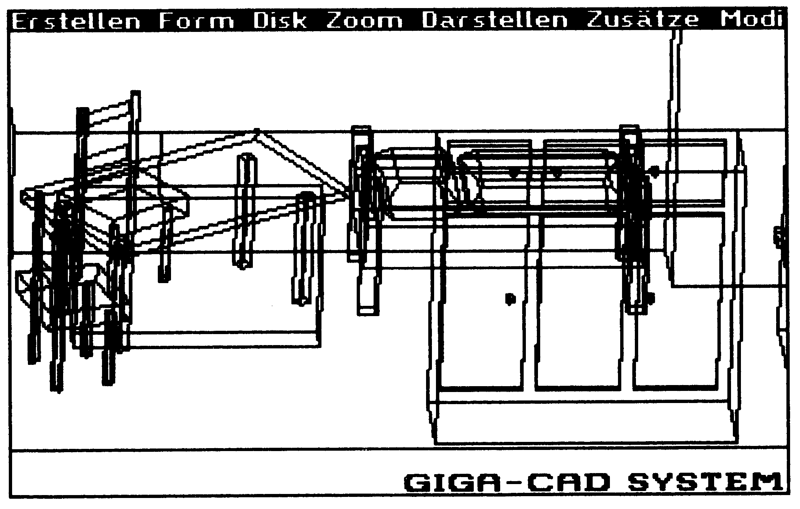
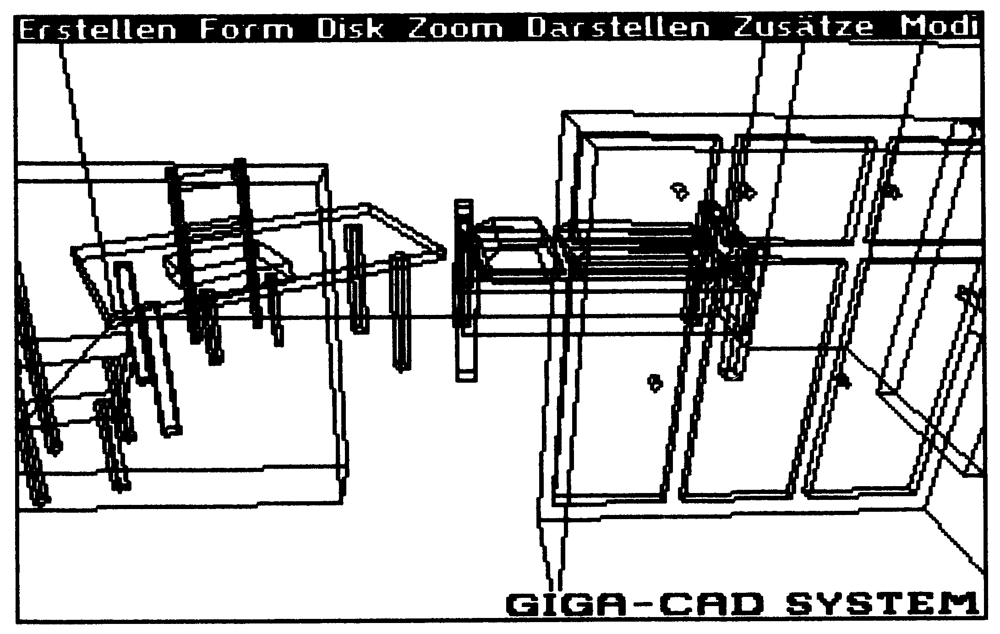
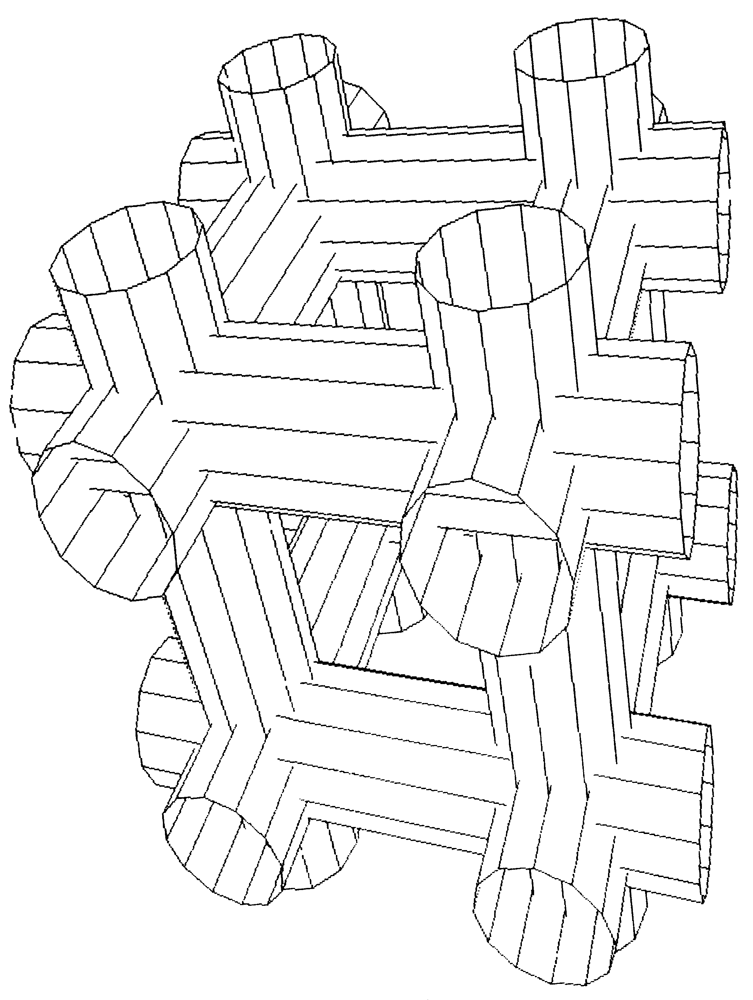
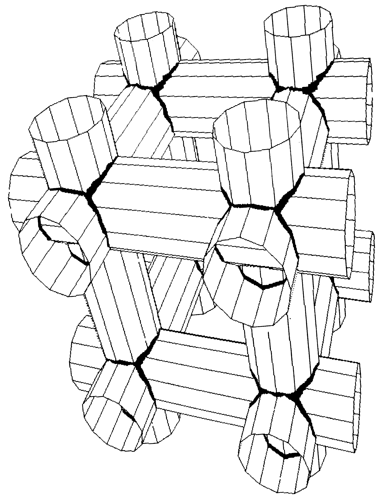
C. – Hidden-Line-Modus an/aus: Die bearbeitete Grafik wurde bisher aus Geschwindigkeitsgründen als sogenanntes »Draht-Modell« dargestellt. Somit geraten auch Linien, die in Wirklichkeit nicht sichtbar wären (da sie durch andere Flächen verdeckt würden) auf den Bildschirm. Schaltet man nun den Hidden-Line-Modus ein, werden diese Linien verdeckt und damit aus der Grafik ausgeblendet. Dabei ist jedoch die Berechnungszeit wesentlich höher.
D. – Schattierungs-Modus an/aus: Auch schattierte Grafiken sind mit »Giga-CAD« möglich. Dabei holt das Programm 64 beziehungsweise in Multicolor 192 verschiedene Grauabstufungen durch unterschiedliche Rastermuster aus der Trickkiste. Dabei wird der Körper so schattiert, als würde er von der Sonne angestrahlt. Der Rechenaufwand ist der gleiche wie bei Hidden-Line-Grafiken. Jedoch werden hier die sonst weißen Flächen mit dem jeweiligen Muster aufgefüllt. Hier kommt nun endlich die so oft angesprochene Verbindungsvorschrift zum Tragen. Veranschaulicht wird dies in Bild 18. Der erste der dargestellten Kelche wurde mit der Verbindungsvorschrift »0«, der zweite mit »1« und der dritte mit »2« konstruiert. Bei einer Kugel wäre beispielsweise die Verbindungsvorschrift »2« anzuraten. Bei Gebäuden sollten Sie aber besser Verbindungsvorschrift »0« wählen. Rotationskörper, wie der abgebildete Kelch, sind oftmals mit »1« sehr wirkungsvoll.
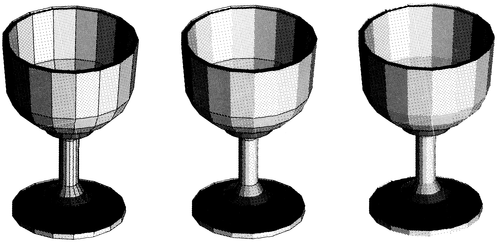
E. – Lichtquellen-Koordinaten: Die Lage der Lichtquelle, die den Körper bei der Schattierung »anstrahlt«, ist frei definierbar. Auch hier lassen sich wieder die Koordinaten wie beim Fluchtpunkt eingeben.
F. – Multicolor-Modus an/aus: Grafiken können ebenso in Multicolor dargestellt werden, wobei die Anzahl der verschiedenen Schattierungsstufen sogar auf 192 ansteigt.
G. – Doppelmodus HiRes und Multi an/aus: Zwei Grafiken werden gleichzeitig auf je einem Grafikbildschirm in Multicolor und HiRes erstellt. Während der Berechnung bleibt der HiRes-Bildschirm eingeschaltet. Sämtliche Doppelmodi werden bei Grafiken mit 4- beziehungsweise 10facher Auflösung ignoriert.
H. – Hidden-Line und Schattierung an/aus: Mit diesem Menüpunkt ist es möglich, Grafiken gleichzeitig in Hidden-Line- und im Schattierungsmodus auf je einem der beiden Grafikbildschirme darzustellen. Dabei wird ständig zwischen beiden hin- und hergeschaltet (Bild 19, 20).
I. – Schnittebene an/aus: Wollen Sie wissen, »was die Dinge im Inneren zusammenhält«, schneiden Sie doch einfach den Körper mit dieser Funktion auf. Übrigens ist eine Verschiebung der Schnittebene bei Filmen nur wirksam, wenn sie mit diesem Menüpunkt zuvor eingeschaltet wird. Dabei gibt der hier eingegebene Wert den Startwert der Verschiebung an. Die Schnittebene ist immer parallel zur Projektionsebene (Bildschirm), aber dafür in der Tiefe variabel. Wollen Sie nun Ihr Objekt sehr weit vorn durchschneiden, müssen Sie den Wert negativ, hinter der Hälfte positiv wählen. Mit einem Trick läßt sich ganz einfach eine sinnvolle Tiefe der Schnittebene ermitteln. Gehen Sie einfach in der Eingabeeinheit in den »Zeichnen«-Modus. Hier können Sie direkt am Punktraster im Bildschirmfenster mit der Draufsicht den Abstand abzählen, wobei man von der Mitte (Kreuz) ausgehen muß. Der Abstand zwischen zwei Rasterpunkten entspricht 10 Einheiten.
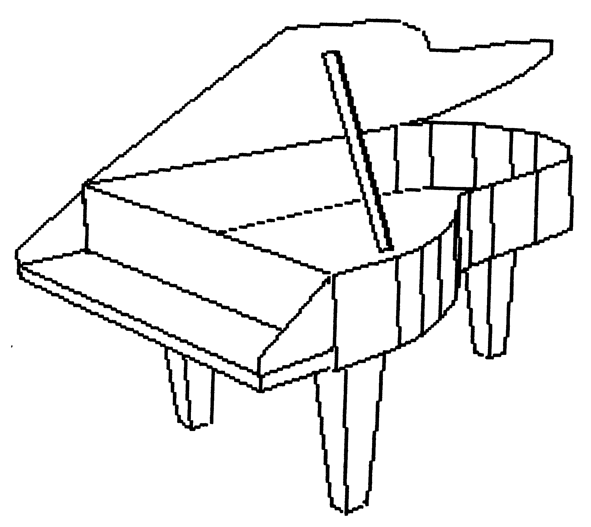
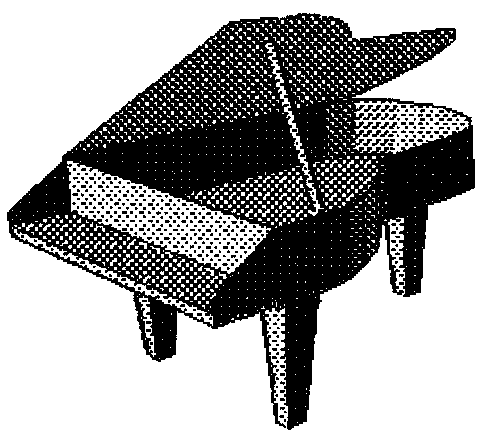
Mit der <←>-Taste kann die Eingabe der Darstellungsmodi abgeschlossen werden. Wirksam werden jedoch die Parameter erst, wenn man »Darstellen« aufruft. Die perspektivische Darstellung wird bei »Form« und »Zoom« auch schon aktiviert. Einige dieser Befehle sind so untereinander verknüpft, daß keine unsinnigen Kombinationen entstehen. Schaltet man beispielsweise den Schattierungs-Modus an, wird gleichzeitig Hidden-Line-Modus aktiviert.
Als die Bilder laufen lernten
Jetzt haben wir alle Befehle und Funktionen kennengelernt, die zum Erstellen und Bearbeiten zur Verfügung stehen. Manche Dinge muten vielleicht zunächst komplizierter an, als sie eigentlich sind. Der gekonnte Umgang damit erfordert selbstverständlich etwas Übung und Erfahrung, die Sie sich jedoch sehr schnell automatisch aneignen werden. Dann finden Sie auch den Schlüssel zu den unbegrenzten Möglichkeiten, die das Programm bietet. Viele Dinge, die sehr kompliziert und daher schwer vorzustellen sind, kann man mit »Giga-CAD« veranschaulichen. Zum Beispiel können Chemie-Freaks ihre Molekülmodelle räumlich erstellen und anschließend als Film rotieren lassen. All diejenigen, die technische Zeichnungen anfertigen wollen, kommen hier selbstverständlich auch auf ihre Kosten (Bild 21, 22). Selbst der Hobby-Bastler kann mit diesem Software-Paket seine Projekte vorher grafisch konstruieren (Bild 23). Wer seinen Dachboden ausbauen möchte, kann überprüfen, ob ein zusätzlicher Tisch nicht doch ganz passend wäre oder ob eine Kommode nicht besser wirkt. Wer es genau wissen will, kann ja noch zusätzlich seine Gebilde aufschneiden. Auch der Einsatz für die Schule wäre denkbar. Werbegrafiken sind ganz einfach und effektvoll zu realisieren. Wer also noch ein Emblem für sein Geschäft sucht, sollte dabei nicht auf »Giga-CAD« verzichten. Damit sind nur einige wenige der denkbaren Bereiche angesprochen. Folglich sind Ihrem Einfallsreichtum keine Grenzen gesetzt (Bild 24, 25). Sollten Sie sich in irgendeinem Programmteil »verheddert« haben, gelangen Sie im allgemeinen mit der Taste <←> wieder ohne Datenverlust aus der Misere. Manchmal ergeben sich Wartezeiten, besonders bei komplizierten Körpern. Man sollte sich dabei nicht zu der Annahme verleiten lassen, der Computer sei abgestürzt. Ferner möchten wir noch darauf hinweisen, daß die Zahl der Flächen auf 421 und die Zahl der Eckpunkte auf 1322 begrenzt sind. Das heißt im Klartext, daß der Computer beim Überschreiten dieser Zahlen alle weiteren Flächen ignoriert. Das tritt jedoch praktisch nur ein, wenn man bei Rotationskörpern völlig übertriebene Werte bei »Anzahl der Facetten« eingibt.
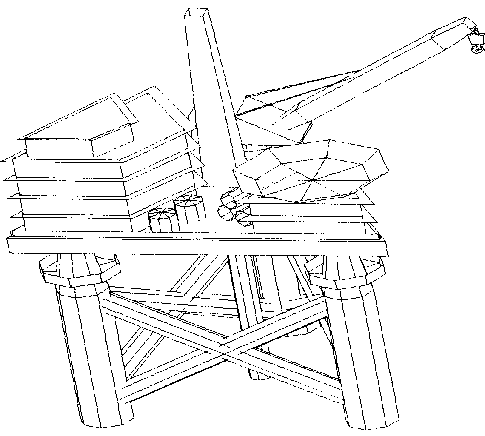
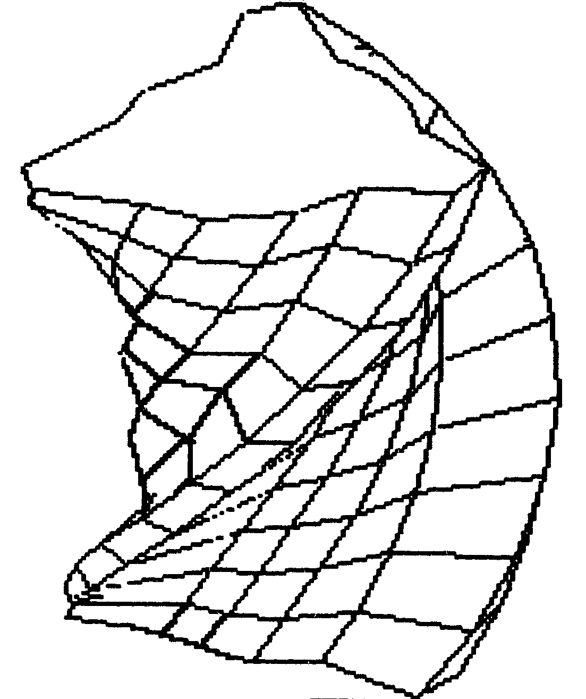
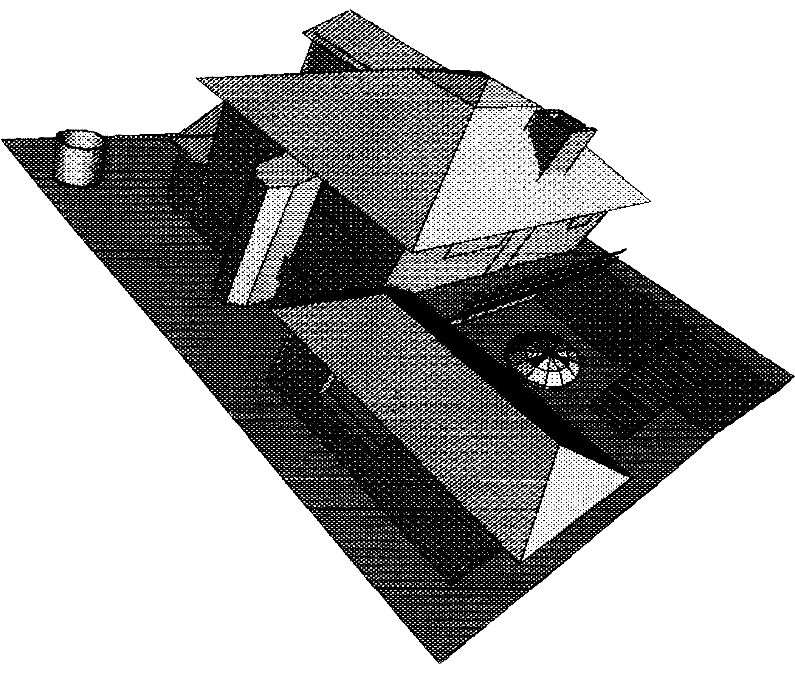
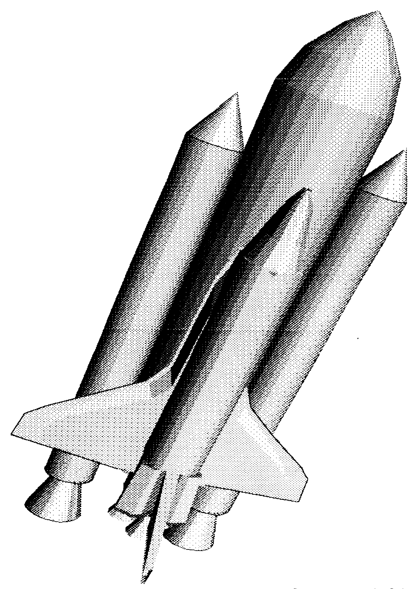
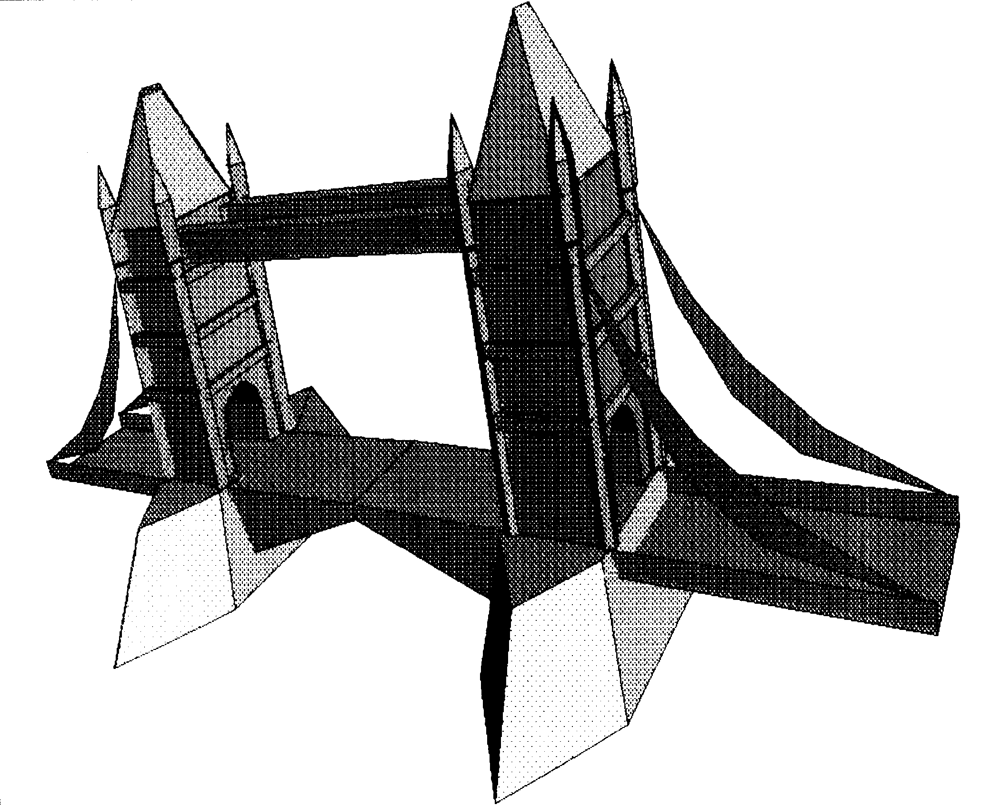
Es ist vollkommen abwegig, auf einem Computer mit 64 KByte RAM wie dem C 64 und einem 8-Bit-Prozessor wie dem 6510, der noch dazu nur auf 1 Megahertz getaktet ist, schattierte Hidden-Line-Filme in Echtzeit zu berechnen. So wählten wir die einzig sinnvolle Lösung. Hintereinander werden 24 einzelne Filmbilder berechnet, die sofort auf Diskette gespeichert werden (Bild 26). Das geschieht im bisher beschriebenen Hauptprogramm. Bevor man einen solchen Film betrachten kann, ist es notwendig, einen RESET auszulösen oder den Computer einfach auszuschalten. Danach müssen Sie das entsprechende Programm (Listing 5) mit »LOAD "CAD.MOVIE",8« von der Systemdiskette laden. Ein kompletter Film benötigt 48 KByte und kann somit nicht während der Berechnung im Speicher bleiben. Ist nun ein Film fertig berechnet und komplett auf Diskette gespeichert, läßt sich der Film mit Hilfe dieser speziellen Routine betrachten. Sie lädt die gesamte Filmsequenz und kopiert sehr rasch ein Viertelbild nach dem anderen in die Grafik, wodurch eine nahezu fließende Bewegung entsteht. Nach dem Start des Programms wird der Maschinenspracheteil nachgeladen. Anschließend erscheint ein Menü mit einigen wichtigen Grundoperationen auf dem Bildschirm.
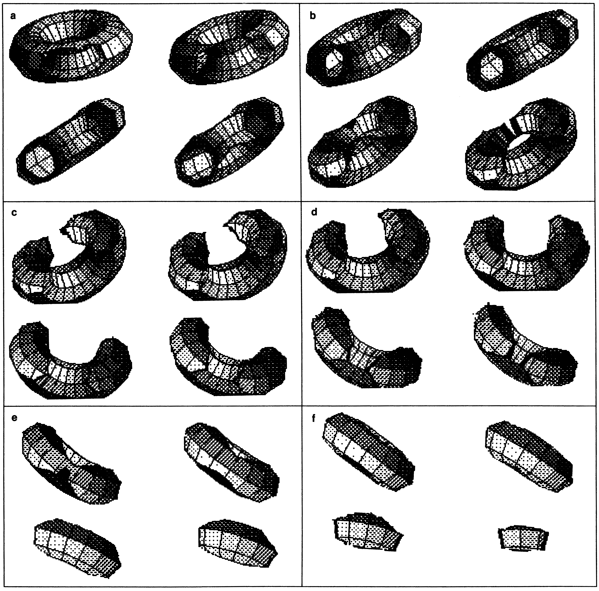
A. – Film laden: Diese Routine dient dem Laden von Filmen. Sie brauchen dazu nur den Namen des Films angeben, also ohne »FI.« und der Nummer nach dem Namen. Zur Kontrolle gibt der Computer immer an, welches der 24 Filmbilder er gerade lädt.
B. – Einzelnes Bild laden: Diese Funktion ermöglicht es dem Anwender, ein beliebiges Filmbild an irgendeine Stelle in den Speicher zu laden. Es ist natürlich notwendig, daß der Name mit der nachgestellten Nummer eingegeben wird, da sonst nicht klar wäre, welches Bild aus dem Film geladen werden soll. Außerdem fragt der Computer noch, an welche Position (1 bis 24) im Film das Bild geladen werden soll.
C. – Diskettenkommando senden: Diese Funktion entspricht der bereits bekannten gleichen Namens.
D. – Directory anzeigen: Auch dieser Menüpunkt wurde bereits besprochen.
E. – Ablauf: zyklisch/vor- und rückwärts. Der Benutzer hat in Bezug auf die Sequenz des Films zwei Möglichkeiten: »zyklisch« oder »vor/rückwärts«. Bei Filmen, die reine Umdrehungen darstellen, ist ein zyklischer Ablauf ratsam. Bei allen Filmen, bei denen das (fiktive) 25. Bild nicht kongruent zum ersten ist, empfiehlt es sich, die andere Sequenz zu wählen. Das ist zum Beispiel bei der Verschiebung der Schnittebene der Fall. In vielen Fällen sind sogar beide Variationen ganz wirkungsvoll. Aus diesem Grund empfiehlt es sich fast immer, beide Möglichkeiten durchzutesten.
F. – Modus: HiRes/Multicolor: Mit dieser Funktion kann man zwischen HiRes- und Multicolordarstellung umschalten.
G. – Farben ändern: Mit diesem Menüpunkt schufen wir die Möglichkeit, die Farben ganz Ihrem Geschmack entsprechend auszuwählen. Als Tip sei an dieser Stelle bemerkt, daß im Multicolormodus die Farben 6,14,0,15,15 (in dieser Reihenfolge eingeben) zu empfehlen sind.
H. – Film ansehen: Bei diesem Menüpunkt handelt es sich um das Kernstück der ganzen Routine. Hiermit läßt sich der geladene Film betrachten. Während des Ablaufs bieten wir Ihnen noch einige Gestaltungsmöglichkeiten. Die Geschwindigkeit der Rotation wird per Joystick gesteuert. Drückt man den Joystick nach links, so verlangsamt sich der Ablauf des Films. Schneller wird er, wenn man mit dem Joystick in die andere Richtung lenkt. Die Geschwindigkeit kann maximal 24 Bilder pro Sekunde betragen.
Leistungsstarke Hardcopy-Routine
Irgendwann stellt sich jedem Druckerbesitzer die Frage, wie er die berechneten Grafiken zu Papier bringen kann. Für eine einfache Hardcopy hat sicher jeder eine geeignete Routine, aber wie um alles in der Welt bringt man seinen Drucker dazu, Grafiken mit einer Auflösung von 1000*640 Punkten auszugeben? Die Panik des verzweifelten Anwenders wird sich legen, wenn er erst einmal die Hardcopy-Routine »CAD.HARDCOPY« (Listing 6) geladen und gestartet hat. Endlich steht einmal eine Routine zur Verfügung, die mehr kann als nur den Inhalt eines einzelnen Grafikbildschirms in nur einer Größe auf nur einem Drucker auszudrucken. Das Programm ist so konzipiert, daß es alle Drucker unterstützt, die folgende Fähigkeiten haben:
— Der Drucker kann mit 8-Nadel-Grafik vertikal untereinander drucken.
— Die Ausgabe der Grafik kann im Bit-Image-Mode erfolgen.
Aber für alle Besitzer von anderen Druckern besteht kein Grund, den Kopf hängen zu lassen! Sämtliche Grafiken werden auf Diskette im gängigen Format gespeichert und lassen sich mit Programmen wie »Hi-Eddi« ausdrucken. Diejenigen, die einen MPS 801 oder MPS 802 besitzen, müssen statt Listing 6 und 21 Listing 7 und 22 beziehungsweise Listing 8 und 23 eingeben. Wer eine höhere Auflösung als 320*200 Punkte wünscht, kommt hier auf seine Kosten. Die »Giga-CAD Hardcopy« -Routine hat es in sich! Sie brauchen das Programm nur einmal an Ihren Drucker anpassen, und schon werden die jeweiligen Daten immer mitgeladen. Mit dem Modus »doppelte Dichte« hat es eine besondere Bewandtnis: Der Druckkopf druckt jeweils acht Zeilen in doppelter Dichte, wobei jede zweite Zeile ausgelassen wird. Anschließend bringt er die jeweils ausgelassenen Zeilen zu Papier, wobei der Ausdruck um einen halben Punkt nach unten versetzt erfolgt. Doch am besten befassen wir uns zunächst mit den einzelnen Menüpunkten.
A. – Grafik laden: Selbstverständlich kann man auch Grafiken in der Standardgröße ausdrucken. Dazu ist es notwendig, die Grafik zu laden. Auch hier ist das »PI.« vor dem Namen nicht mit einzugeben, wenn der Computer Sie nach dem Filenamen fragt. Wollen Sie andere Bilder, die nicht mit »Giga-CAD« erstellt wurden, ausdrucken, so ist der Filename auf Diskette so zu ändern, daß dem Namen ein »PI.« vorangestellt wird. Das geschieht üblicherweise mit dem »Diskettenkommando senden«, Menüpunkt »G«: »R:PI.NAME=NAME«.
B. – Hardcopy einfach: Die Grafik, die zuletzt geladen wurde, wird nach Aufruf dieses Menüpunktes auf dem Drucker ausgegeben (Bild 27). Sollte dabei nicht das gewünschte Ergebnis erzielt werden, sollten Sie sich erst Klarheit darüber verschaffen, ob die Anpassung auch wirklich korrekt war.
C. – Hardcopy vierfach: Die Grafiken werden nacheinander von Diskette geladen und untereinander ausgedruckt (Bild 28). Es versteht sich von selbst, daß man hier den Filenamen eingeben und die entsprechende Diskette in das Laufwerk schieben muß.
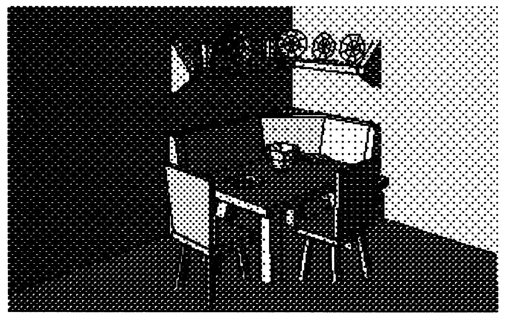
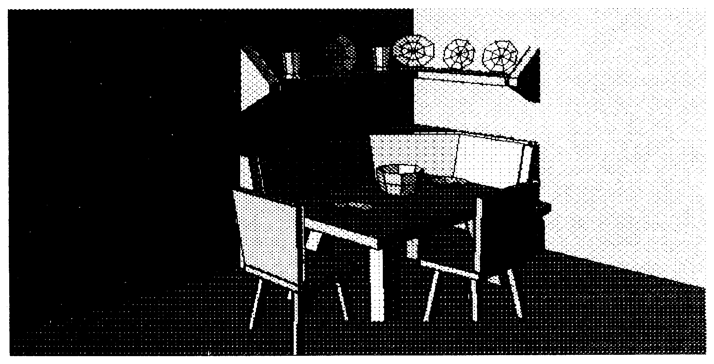
D. – Hardcopy 10fach: Dieser Programmpunkt entspricht im wesentlichen dem eben genannten. Die Grafik wird jedoch um 90 Grad gedreht und in 10facher Größe ausgedruckt (fünf Streifen untereinander mit je zwei Bildern parallel) (Bild 29).
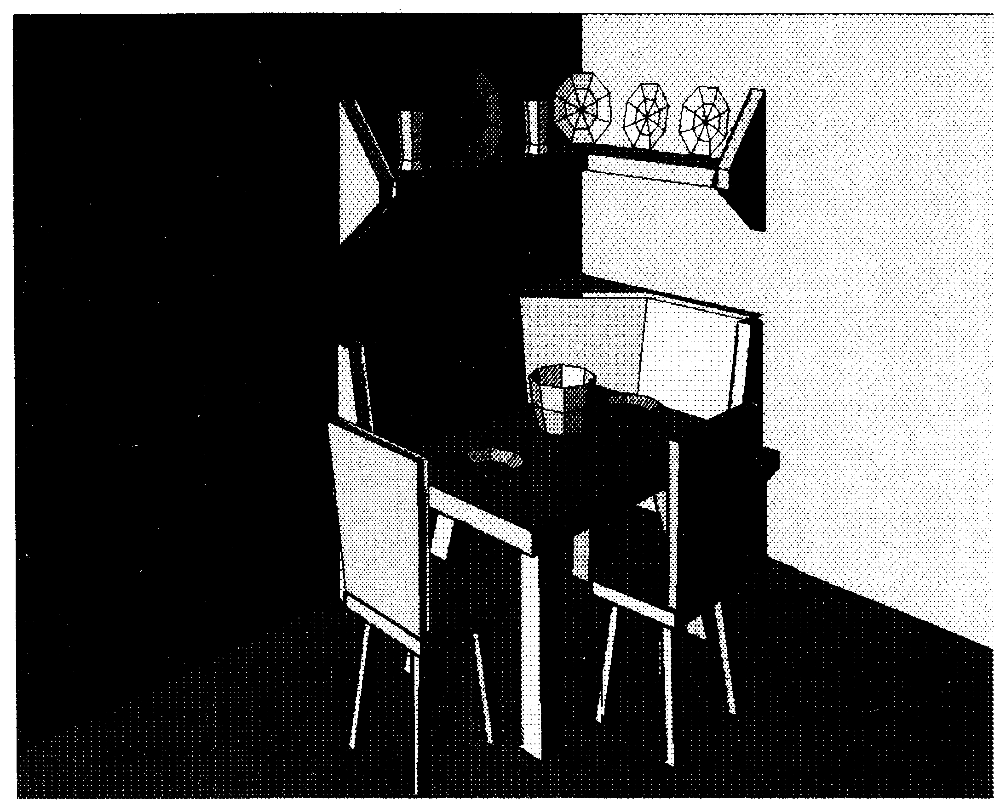
E. – Einfache Dichte/Doppelte Dichte: Praktisch alle gängigen Hardcopy-Routinen drucken die Grafiken in einfacher Dichte aus. Aber bei den meisten Druckern bekommt man Schwierigkeiten mit dem rechten Blattrand beim Ausdruck von Grafiken mit vier- beziehungsweise 10facher Auflösung. Diese Schwachstelle haben wir umgangen, indem wir die Möglichkeit schufen, Grafiken in doppelter Dichte auszudrucken. Auch einzelne Grafiken können in doppelter Dichte ausgedruckt werden. Dabei wäre natürlich zu beachten, daß das nur mit entsprechenden Druckern möglich ist.
F. – Druckeranpassung: Dieser Menüpunkt muß nur einmal aufgerufen werden, und zwar dann, wenn Sie Ihren Drucker anpassen wollen. Die ermittelten Daten werden auf Diskette gespeichert, um immer nach dem Laden des Programms zur Verfügung zu stehen. Zur Anpassung wäre sonst nichts weiter zu sagen, da der Computer Sie durch detaillierte Fragen bei der Eingabe unterstützt. Als Sequenz sind immer die ASCII-Codes der Steuerzeichen einzugeben. Zuerst muß dem Computer die Zahl der Steuerzeichen übermittelt werden. Wollen Sie also »ESC E« senden, muß folgendermaßen vorgegangen werden: Die Anzahl der Codes beträgt zwei, die Steuerzeichen haben die ASCII-Werte »27« und »69«. Es versteht sich natürlich von selbst, das jeweilige Druckerhandbuch eingehend zu studieren. Durch die Möglichkeit, die Sekundäradresse anzugeben, unter der der Befehl gesendet werden soll, verträgt sich das Programm auch mit einigen Exoten unter den Druckern. Im Normalfall sollte man hier die Sekundäradresse für Linearkanal wählen. Ist das Ergebnis immer noch nicht befriedigend, sollte versucht werden, das Interface durch den eventuell vorhandenen DIPschalter auf Durchgang zu schalten. Die durch Listing 10 erzeugten Druckerdaten beziehen sich auf Epson und Kompatible. Bei Epsondruckern mit Data-Becker- oder Wiesemann-Interface müssen Sie als Sekundäradresse <1> eingeben. Das Görlitz-Interface verlangt statt dessen die Sekundäradresse <4>. Besitzen Sie einen SG-10, so ist der »Zeilenabstand auf n/144 Inch« einzustellen. Das entspricht der Sequenz: 27,51,1 beziehungsweise bei Epson-Druckern 27,51,1.5
G. – Diskettenkommando senden: Dieser Menüpunkt bedarf wohl inzwischen keiner näheren Erklärung mehr.
H. – Directory anzeigen: Entspricht der bereits bekannten Directory-Routine.
I. – Druckerkommando senden: Ein weiteres Extra, das zur hohen Flexibilität beiträgt, ist die Möglichkeit, beliebige Druckersequenzen zu senden. Damit kann man beispielsweise den Druckertabulator weiter nach rechts setzen, um eine einzelne Grafik zu zentrieren. Die Eingabe der Sequenz erfolgt in gewohnter Art und Weise.
J. – Druckerparameter prüfen: Bei dieser Funktion wird die aktuelle Druckereinstellung auf dem Bildschirm ausgegeben.
Die Hardcopy-Routine wurde bewußt separat programmiert, um auch den Ausdruck anderer Grafiken zu ermöglichen, ohne das ganze Hauptprogramm von »Giga-CAD« laden zu müssen.
Eingabehinweise
Die Maschinenteile müssen mit dem MSE eingegeben werden. Mit dem Listing 11 hat es jedoch eine besondere Bewandtnis. Es handelt sich nämlich hierbei um die Grafikdaten der Kopfzeilen und der Grafiksymbole. Diese wurden speziell kodiert, so daß das MSE-Listing etwa um die Hälfte kürzer wurde. Deshalb müssen die Daten nach dem Abtippen wieder dekodiert werden. Für Sie bedeutet das im Klartext, daß Sie zuerst Listing 11 in gewohnter Weise mit dem MSE eingeben müssen. Anschließend laden Sie das eingegebene Programm »HRG.CAD.SRC« und starten es. Auf Diskette wird daraufhin das File »HRG.CAD.OBJ« erzeugt, in dem die Grafikdaten in der erforderlichen Form vorliegen. Die beiden Cursor-Sprites werden durch ein kurzes Basic-Programm (Listing 9) direkt auf Diskette erzeugt. Es ist von enormer Wichtigkeit, darauf zu achten, daß die REM-Zeilen und die Space-Zeichen zwischen den Befehlen nicht mit eingegeben werden! Andernfalls reicht der Speicherplatz nicht aus. Auch hier sollten die Basic-Listings wieder üblicherweise mit dem Checksummer abgetippt werden. Es empfiehlt sich, für das Programm eine eigene Diskette zu verwenden, um alle Systemfiles auf einer Diskette abzulegen. Sollten Sie einen geeigneten Compiler haben, wie den Austrocomp, wäre es ratsam, die Listings 2, 3 und 4 zu compilieren. Selbstverständlich ist das Programm auch so uneingeschränkt lauffähig, aber einige Dinge werden durch das Compilieren noch abgerundeter und flüssiger. An dieser Stelle sei erwähnt, daß natürlich alle langsamen Funktionen durch Programmierung in Assembler ein Optimum an Geschwindigkeit erlangen. Lediglich einfache Eingaben und die Menüsteuerungen sind in Basic programmiert. Das File mit den Druckerdaten wird von Listing 10 auf Diskette erzeugt. Die Source-Listings (Listing 24 bis 26) müssen nicht abgetippt werden. Sie dienen lediglich der Verdeutlichung einiger Algorithmen. Es wurden gezielt diese Source-Listing-Auszüge gewählt, da gerade diese Routine für den Leser von Interesse sein dürften. Da wäre zum Beispiel die Directoryroutine (Listing 24). Wer hätte nicht schon einmal ein derartiges Unterprogramm in seinem Basic-Programm benötigt. Oft jedoch wird dann die Routine nur in Basic programmiert. Das artet jedoch zwangsläufig in eine nervenaufreibende Warterei aus. Diese Probleme fallen natürlich bei der sehr schnellen und zudem kurzen Assemblerroutine ganz weg!
Nun zur Hardcopy-Routine: Die meisten Routinen arbeiten nur mit einem bestimmten Drucker problemlos zusammen. Deshalb ist die Hardcopy-Routine von »Giga-CAD« sehr universell angelegt. Sollte Ihr Drucker dennoch streiken, ermöglicht Ihnen eventuell das Source-Listing (Listing 25), die Routine für Ihren Drucker umzuschreiben. In dem Source-Listing der Movie-Routine (Listing 26) wird das Geheimnis bewegter Grafiken gelüftet. Sämtliche Source-Listings sind ausführlich und übersichtlich dokumentiert, so daß eigentlich jeder Schritt nachvollziehbar ist. Somit können die Routinen auch für eigene Zwecke abgeändert werden.
Erläuterung der Assembler-Routinen
Um das ganze Programm für Sie durchsichtiger zu gestalten, haben wir in Tabelle 1 die verwendeten Assemblerroutinen mit ihrer Syntax abgedruckt. Somit geben wir Ihnen Gelegenheit, eventuelle Änderungen anzubringen. Ferner lassen sich die Maschinenspracheteile auch in eigene Programme als Basic-Erweiterung einbauen. Aufhorchen läßt zunächst einmal die Tatsache, daß man über zwei Grafikbildschirme verfügt und wahlweise auf einem der beiden oder auf beiden gleichzeitig zeichnen kann. Außerdem kann man eine der beiden Grafiken anzeigen, mit mehreren Verknüpfungsarten Grafiken ineinander kopieren und im Rasterinterrupt mit variabler Geschwindigkeit zwischen beiden umschalten. Selbstverständlich sind auch Routinen enthalten, die die Darstellung dreidimensionaler Gebilde unterstützen. Daraus ergibt sich zwangsläufig, daß Routinen wie zum Beispiel zum Zeichnen von Kreisen und Ellipsen wegen des fehlenden Speicherplatzes nicht integriert sind. Auch sind solche Routinen bei einem CAD-Programm überflüssig. Aber wer Lust hat, kann sich ja entsprechende Befehle dazuprogrammieren. Aber enorm praktisch ist dafür zum Beispiel der »Screenline«! Endlich ist Schluß mit dem »?ILLEGAL QUANTITY ERROR« beim Zeichnen von Linien. Der »Screenline«-Befehl schneidet automatisch überstehende Linien ab und stellt den verbleibenden Rest auf dem Bildschirm dar. Wie Sie anhand der Speicherbelegungstabelle (Tabelle 2) erkennen, wird der gesamte Speicher des C 64 von »Giga-CAD« beansprucht. Bei der Planung und Entwicklung des Programms wurde ein besonderes Augenmerk auf die optimale Ausnutzung des zur Verfügung stehenden Speicherplatzes gelegt. Auch die Basic-Programme wurden mehrfach in Bezug auf Länge und Geschwindigkeit optimiert. Da der Speicher jedoch zu klein ist, um bei einer vernünftigen Punkt- und Flächenanzahl das gesamte Programm zu fassen, mußte auf die Overlay-Technik zurückgegriffen werden. Im Klartext heißt das, daß einzelne Programmteile nachgeladen werden und sich teilweise überlappen. An dieser Stelle sei auf einen weiteren Vorteil der Maschinenspracheroutinen hingewiesen. Da man Teile von HiRes (1 bis 8) (Listing 12 bis 19) laden kann, lassen sich so die benötigten Befehle auswählen. Zu erwähnen ist lediglich die Einschränkung, daß die Teile in aufsteigender Reihenfolge geladen werden müssen, da Routinen mit höheren Nummern teilweise auf Routinen mit niedrigeren Nummern zurückgreifen. Außerdem muß man vor dem Aufruf anderer Befehle den »Create«-Befehl (SYS 37021) ausführen. Der Aufruf der Befehle erfolgt stets mit »SYS Adresse...«. Sieht ein Befehl eine Parameterübergabe vor, so müssen diese durch Kommata von der SYS-Adresse getrennt werden. Die Parameter können sowohl Variable und Formeln als auch Zahlen sein. Der Verzicht auf einen Aufruf als Basic-Befehl hat zum einen den Vorteil, daß der Speicherplatz, den die Befehlstabelle benötigen würde, eingespart wird. Zum anderen läßt sich dadurch der Aufruf schneller durchführen, da nicht in einer Tabelle gesucht werden muß. Außerdem kann man so das Programm besser compilieren. Der Zeichen-Modus, in der Tabelle durch die Variable »ZM« ersetzt, kann im allgemeinen die Werte 0 bis 2 annehmen. <0> löscht, <1> setzt und <2> invertiert Punkte. Eine weitere öfters verwendete Variable ist »BS«, die den Bildschirm angibt. Bei allen Zeichenbefehlen ist für die Variable ein Wert zwischen 1 und 3 anzugeben. Bei <1> wird nur auf dem ersten, bei <2> ausschließlich auf dem zweiten Bildschirm gearbeitet. Gibt man als Bildschirmnummer <3> an, so wird auf beiden Bildschirmen gleichzeitig gezeichnet. Anders liegen die Dinge bei den Befehlen »HIRES«, »SHOW«, »COPY«, »UNFLASH«, »PIC LOAD« und »PIC SAVE«. Hier kann man jeweils nur wahlweise Bildschirm »1« oder »2« behandeln. Bei »SHOW« läßt sich zusätzlich für »BS« noch »0« verwenden, wodurch der Textbildschirm wieder eingeschaltet wird.
| Liste der Einsprungadressen der Maschinenroutinen | ||||
|---|---|---|---|---|
| HiRes 1 | Adr. | Parameter | Funktion | Listing 12 |
| HiRes | 50181 | ,pf,hf,bs | Löscht Bit-Map bs und initialisiert Farbspeicher mit Punktfarbe pf (0-15) und Hintergrundfarbe hf (0-15) | |
| Copy | 50292 | ,bs,ve | Kopiert die jeweils andere Bit-Map in die Bit-Map bs unter Verwendung der Verknüpfung ve : ve = 0 : direktes Kopieren ohne Verknüpfung ve = 1 : OR-Verknüpfung ve = 2 : EXOR-Verknüpfung |
|
| Plot | 50447 | ,x,y,zm,bs | Setzt einen Punkt mit den Koordinaten x, y in der Grafik bs. | |
| Show | 50707 | ,bs | Schaltet den Bildschirm bs ein. | |
| Block | 50859 | ,x1,y1,x2,y2,zm,bs | Zeichnet ein ausgefülltes Rechteck auf dem Bildschirm bs. Die Koordinaten x1, y1 geben dabei den Eckpunkt links oben, x2 und y2 den Eckpunkt rechts unten an. | |
| Line | 51049 | ,x1,y1,x2,y2,zm,bs | Zieht eine Linie von x1,y1 nach x2,y2 | |
| Joy 1 | 51627 | :j=PEEK(859) | Ermittelt Stellung des Joysticks (Port 2) und übergibt diese in der Speicherstelle 859 (siehe Erläuterungen). | |
| Flash | 51480 | ,v | Schaltet (Rasterinterrupt-gesteuert) zwischen beiden Bit-Maps hin und her. Dabei gilt für die Geschwindigkeit v: 1 → 128 → 255 → 0 sehr schnell langsam extrem langsam |
|
| Unflash | 51507 | ,bs | Beendet das Rasterinterrupt-Blinken und schaltet auf Bit-Map bs um (bs darf hier nicht 0 sein !) | |
| Rec | 51800 | ,x1,y1,x2,y2,zm,bs | Zeichnet ein Rechteck mit den angegebenen Eckpunkten | |
| Cross | 52008 | ,zm,bs | Zeichnet ein Kreuz und unterteilt so die Grafik in gleichgroße Viertel. | |
| 2D-Punkte | 52103 | ,zm,bs | Legt ein Punktraster mit 10 Pixel Abstand über die Bit-Map bs. | |
| 3D-Punkte | 52176 | ,zm,bs | Füllt den gesamten Bildschirm bs bis auf die Kopfzeile und die Menü-Symbole mit einem Punktraster von 5 Pixel Punktabstand. | |
| Text 1 | 52466 | ,bs | Kopiert die CREATE-Kopfzeile in die Bit-Map bs. | |
| Text 2 | 52490 | ,bs | Kopiert die MAIN -Kopfzeile in die Bit-Map bs. | |
| 3D-Menü | 52517 | ,bs | Kopiert das Window mit den Grafik-Symbolen in die Bit-Map bs. | |
| X-Achsen | 52664 | ,zm,bs | Zeichnet die 3 Projektionen der X-Achse in die Windows der 3D-Ansicht. | |
| Y-Achsen | 52835 | ,zm,bs | Zeichnet die 3 Projektionen der Y-Achse in die Windows der 3D-Ansicht. | |
| Z-Achsen | 53045 | ,zm,bs | Zeichnet die 3 Projektionen der Z-Achse in die Windows der 3D-Ansicht. | |
| HiRes 2 | Adr. | Parameter | Funktion | Listing 13 |
| Name | 36878 | ,bs | Kopiert den Programmnamen »GIGA-CAD SYSTEM« mittels OR-Verknüpfung in die Bit-Map bs. | |
| Create | 37021 | – | Erzeugt diverse Floating-Point-Variablen und legt diese im Speicher ab. | |
| 3D-Line | 38378 | ,x1,y1,z1,x2,y2,z2,zm,bs | Zeichnet alle 3 Projektionen einer dreidimensionalen Linie von Punkt x1, y1, z1 zum Punkt x2, y2, z2 in den entsprechenden Vierteln der 3D-Ansicht. Über den Bildschirm hinausragende Linien werden per Strahlensatz abgeschnitten, das heißt, die Linien behalten ihren ursprünglichen Winkel bei. | |
| Joy 2 | 39247 | ,x,y,f:x=PEEK(2024)+256*PEEK(2025) y=PEEK(2026):a=PEEK(631)) | Bewegt Cursor-Sprite, siehe Erläuterungen. | |
| Koord.-Code | 39718 | ,x1,y1,z1,q | Kodiert die 3D-Koordinaten x1,y1,z1 in das 3D-Koordinatenarray mit Index q (siehe Erläuterungen). | |
| Koord.-Decode | 40052 | ,q:x1=USR(1):y1=USR(2):z1=USR(3) | Dekodiert 3D-Koordinaten (siehe Erläuterungen). | |
| Fläche-Code | 40206 | ,q,i,mn,vb | Kodiert die Flächenpointer ins Flächenarray (siehe Erläuterungen). | |
| Fläche-Decode | 40344 | ,i:q=USR(1):mn=USR(2):vb=USR(3) | Liest die Flächenpointer aus (siehe Erläuterungen). | |
| HiRes 3 | Adr. | Parameter | Funktion | Listing 14 |
| Scale | 22659 | ,zm,bs | Kopiert den Rotations-Maßstab in die Grafik bs. | |
| Screenline | 21764 | ,x1,y1,x2,y2,zm,bs | Erfüllt die gleiche Aufgabe wie der »Line«-Befehl, schneidet jedoch überstehende Linien mit Hilfe des Strahlensatzes ab (beliebiger Bereich der Koordinaten!). | |
| Circle | 21836 | ,bs:On/Off-Flag liegt bei 40783 | Zeichnet einen Hilfskreis (siehe Erläuterungen). | |
| Umformung | 22873 | ,mo,zn,dg,d,ei,j,w | Transferiert das Objekt (siehe Erläuterungen). | |
| 3D-Darstell. | 25123 | ,zn,dg,zm,bs | Stellt Objekt in der 3D-Ansicht dar (siehe Erläuterungen). | |
| 3D-Cursor | 25652 | ,px,py,pz,zm,bs | Zeichnet alle 3 Projektionen des Cursor-Kreuzes | |
| Allclear | 25919 | – | Löscht 3D-Koordinaten- und Flächen-Pointer-Array. | |
| Pic Load | OPEN2,8,2,"NAME,p,r":SYS26101,bs:CLOSE2 | Lädt die Grafik "NAME" von Diskette in die Bit-Map bs. | ||
| Pic Save | OPEN2,8,2,"NAME,p,w":SYS26068,bs:CLOSE2 | Speichert Bit-Map bs unter "NAME" auf Diskette. | ||
| Directory | OPEN2,8,0,"$0":SYS26134:CLOSE2 | Gibt das Directory der eingelegten Diskette ohne Programmverlust auf dem Bildschirm aus. | ||
| HiRes 4 | Adr. | Parameter | Funktion | Listing 15 |
| Multi | 21839 | ,c1,c2,c3,bs:poke53281,c4 | Initialisiert den Farbspeicher mit den Multicolor-Farben c1,c2,c3 und der Hintergrundfarbe c4 und schaltet anschließend auf Multicolor-Darstellung der Bit-Map bs um. | |
| Plot Multi | 22114 | ,x,y,zm,bs | »Plot«-Befehl für Multicolor, zm gibt die Farbe an: zm = 0 : Hintergrundfarbe (entspricht löschen) zm = 1 : Multicolor-Farbe c1 zm = 2 : Multicolor-Farbe c2 zm = 3 : Multicolor-Farbe c3 |
|
| Viertel Save | OPEN2,8,2,"name,p,w":SYS22299:CLOSE2 | Speichert den Viertelbildschirm links oben in Bit-Map 2 unter "NAME" auf Diskette. | ||
| Objekt Load | 22541 | ,d,v | Lädt Objekt von Diskette (siehe Erläuterungen). | |
| Objekt Save | 22520 | ,d,v | Speichert Objekt (siehe Erläuterungen). | |
| HiRes 5 | Adr. | Parameter | Funktion | Listing 16 |
| Line-Test | 25257 | ,x1,y1,x2,y2,yw:ax=PEEK(862)+256*PEEK(863):ex=PEEK(864)+256*PEEK(865) | Diese Routine ist nur für HiRes 7 von Nutzen und läßt sich vom Basic aus nicht einsetzen. | |
| HiRes 6 | Adr. | Parameter | Funktion | Listing 17 |
| Fl-Darstell. | 20480 | ,d,fl,ri,a1,a2,a3,h,gr,f1,f2,fk,bs | Stellt das Objekt dar (siehe Erläuterungen). | |
| HiRes 7 | Adr. | Parameter | Funktion | Listing 18 |
| Schattieren | 14857 | ,sl,wq,mc,wm,b,se,ke,d,gr,ec,ed,bs | Schattiert nach entsprechenden Vorbereitungen das im Speicher befindliche Objekt. | |
| HiRes 8 | Adr. | Parameter | Funktion | Listing 19 |
| Macro-Load | 21006 | ,mn,d,v:d=PEEK(2028)+256*PEEK(2029) v=PEEK(2026)+256*PEEK(2027) | Lädt ein Makro von Diskette. | |
| Macro-Save | 21301 | ,n1,d | Speichert das Makro n1 auf Diskette. | |
| Movie | Adr. | Parameter | Funktion | Listing 20 |
| Movie | 50284 | ,f,m,c1,c2,c3 | Läßt den im Speicher befindlichen Film ablaufen. Die Geschwindigkeit wird mit Joystick Port 2 links/rechts gesteuert, mit Feuerknopf wird der Film abgebrochen. Bedeutung der Parameter: f = 0 : zyklischer Ablauf f = 1 : Ablauf vorwärts/rückwärts m = 0 : HiRes-Modus m = 1 : Multicolor-Modus c1–c3 : Farben des Films |
|
| Viertel-Load | 50187 | ,ad | Lädt ein Filmbild (Viertelbildschirm) ab der Adresse ad. | |
| Directory | OPEN2,8,0,"$0":SYS50772:CLOSE2 | Directory-Funktion analog zu »Directory« in HiRes 3. | ||
| Hardcopy | Adr. | Parameter | Funktion | Listing 21 |
| Hardcopy | 50475 | ,320*z,m,a,g | Gibt die Grafikzeile z auf grafikfähigem 8-Nadel-Drucker aus. Einzelheiten sowie genaue Bedeutung der Parameter siehe Erläuterungen. | |
| HiRes | 50192 | ,pf,hf,bs | Analog zu »HiRes« in HiRes 1 mit dem Unterschied, daß die Bit-Map bs nicht gelöscht wird. | |
| Pic Load | OPEN2,8,2,"NAME,p,r":SYS50442,BS:CLOSE2 | Analog zu »Pic Load« in HiRes 3. | ||
| Show | 50299 | ,bs | Analog zu »Show« in HiRes 1. | |
| Directory | OPEN2,8,0,"$0":SYS50901:CLOSE2 | Directory-Funktion analog zu »Directory« in HiRes 3. | ||
| Speicherbelegung in den einzelnen Programmteilen | |
|---|---|
| Cad.Main | |
| $033c – $03fb | Kassettenpuffer (temporärer Speicher für Maschinenprogramme). |
| $0800 – $4fff | Basic-Speicher (Cad.Main) |
| $5000 – $53ca | HiRes 6 |
| $5500 – $6665 | HiRes 3 |
| $554c – $584a | HiRes 4 (Overlay) |
| $67d0 – $6cff | Flächenpointer – Array (0 bis 421) |
| $6d00 – $8bff | 3D-Koordinaten – Array (0 bis 1321) |
| $8c00 – $8ff7 | Farbspeicher für Bit-Map 1 |
| $8ff8 – $8fff | Sprite-Pointer 1 |
| $9000 – $9e5f | HiRes 2 |
| $9e87 – $9fff | Floating-Point-Variablen für Maschinenprogramme |
| $a000 – $bf40 | Bit-Map 1 |
| $bf80 – $bfbf | Sprite-Cursor 1 |
| $c000 – $c3f7 | Farbspeicher für Bit-Map 2 |
| $c3f8 – $c3ff | Sprite-Pointer 2 |
| $c400 – $cfcc | HiRes 1 |
| $d000 – $db59 | Grafikdaten |
| $e000 – $ff40 | Bit-Map 2 |
| $ff80 – $ffbf | Sprite-Cursor 2 |
| Cad.Create | |
| $033c – $03fb | Kassettenpuffer (temporärer Speicher für Maschinenprogramme). |
| $0800 – $51ff | Basic-Speicher (Cad.Create) |
| $5200 – $544d | HiRes 8 |
| $5500 – $6665 | HiRes 3 |
| $67d0 – $6cff | Flächenpointer – Array (0 bis 421) |
| $6d00 – $8bff | 3D-Koordinaten – Array (0 bis 1321) |
| $8c00 – $8ff7 | Farbspeicher für Bit-Map 1 |
| $8ff8 – $8fff | Sprite-Pointer 1 |
| $9000 – $9e5f | HiRes 2 |
| $9e87 – $9fff | Floating-Point-Variablen für Maschinenprogramme |
| $a000 – $bf40 | Bit-Map 1 |
| $bf80 – $bfbf | Sprite-Cursor 1 |
| $c000 – $c3f7 | Farbspeicher für Bit-Map 2 |
| $c3f8 – $c3ff | Sprite-Pointer 2 |
| $c400 – $cfcc | HiRes 1 |
| $d000 – $db59 | Grafikdaten |
| $e000 – $ff40 | Bit-Map 2 |
| $ff80 – $ffbf | Sprite-Cursor 2 |
| Cad.Paint | |
| $033c – $03fb | Kassettenpuffer (temporärer Speicher für Maschinenprogramme). |
| $0800 – $37ff | Basic-Speicher (Cad.Paint) |
| $3800 – $48bb | HiRes 7 |
| $4940 – $49d6 | Floating-Point-Variablen für Schattierung |
| $49dc – $4d27 | Maxima/Minima-Array, gibt die Extrempunkte der einzelnen Flächen an. |
| $4d28 – $4e59 | Hilfsarray für Schattierung |
| $4e5a – $4fff | Array: Cosinus (*192) des Winkels zwischen Normalenvektor einer Fläche und Lichtquellenvektor, bei Schattierung benötigt |
| $5000 – $54ff | Tiefen-Array, gibt die Tiefe des vordersten an dieser Stelle geplotteten Punktes an |
| $5500 – $6665 | HiRes 3 |
| $554c – $584a | HiRes 4 (Overlay) |
| $62a6 – $64d4 | HiRes 5 (Overlay) |
| $67d0 – $6cff | Flächenpointer – Array (0 bis 421) |
| $6d00 – $8bff | 3D-Koordinaten – Array (0 bis 1321) |
| $8c00 – $8ff7 | Farbspeicher für Bit-Map 1 |
| $8ff8 – $8fff | Sprite-Pointer 1 |
| $9000 – $9e5f | HiRes 2 |
| $9e87 – $9fff | Floating-Point-Variablen für Maschinenprogramme |
| $a000 – $bf40 | Bit-Map 1 |
| $bf80 – $bfbf | Sprite-Cursor 1 |
| $c000 – $c3f7 | Farbspeicher für Bit-Map 2 |
| $c3f8 – $c3ff | Sprite-Pointer 2 |
| $c400 – $cfcc | HiRes 1 |
| $d000 – $db59 | Grafikdaten |
| $e000 – $ff40 | Bit-Map 2 |
| $ff80 – $ffbf | Sprite-Cursor 2 |
| Cad.Movie | |
| $033c – $03fb | Kassettenpuffer (temporärer Speicher für Maschinenprogramme). |
| $0800 – $17ff | Basic-Speicher (Cad.Movie) |
| $1800 – $bfff | Bilder 1 bis 21 |
| $c000 – $c3f7 | Farbspeicher für Bit-Map |
| $c400 – $c6a3 | Movie.Cad.Obj |
| $c800 – $dfff | Bilder 22 bis 24 |
| $e000 – $ff40 | Bit-Map |
| Cad.Hardcopy | |
| $033c – $03fb | Kassettenpuffer (temporärer Speicher für Maschinenprogramme). |
| $0800 – $8bff | Basic–Speicher (Cad.Hardcopy) |
| $8c00 – $8ff7 | Farbspeicher für Bit-Map 1 |
| $a000 – $bf40 | Bit-Map 1 |
| $c000 – $c3f7 | Farbspeicher für Bit-Map 2 |
| $c400 – $c724 | Hardcopy.Cad.Obj |
| $e000 – $ff40 | Bit-Map 2 |
1. »Joy 1«: Diese Routine ist für die Abfrage des Joysticks in Port 2 gedacht. Im Programm findet sie zum Beispiel bei der Eingabe des Verformungsgrades per Joystick ihre Anwendung. Nach Aufruf dieses Befehls erfolgt sofort wieder ein Rücksprung ins Basic. Die ermittelte Joystick-Stellung wurde in Speicherstelle 859 abgelegt. Bei »Giga-CAD« wird mit »J=PEEK(859)« der Variablen J der entsprechende Wert zugeordnet. Man erhält für J zunächst einmal die Werte »0« bis »8«. Bei »0« wurde der Joystick überhaupt nicht bewegt. Die Joystick-Stellungen sind, oben beginnend, von 1 bis 8 im Uhrzeigersinn durchnumeriert. Drückt man den Feuerknopf, so liefert die Abfrage den Wert »128«. Wenn man nun bei gedrücktem Feuerknopf den Joystick bewegt, addiert sich zu den Werten 1 bis 8 jeweils 128. Mit anderen Worten ist bei gedrücktem Feuerknopf Bit 7 gesetzt.
2. »Joy 2«: Dieser Befehl unterscheidet sich völlig von dem eben erklärten. Ruft man diese Routine auf, so erscheint das Cursorsprite auf dem Bildschirm. Mit Hilfe des Joysticks kann man den Cursor nun über den ganzen Bildschirm bewegen. Dabei nimmt die Geschwindigkeit bei Bewegungen in einer Richtung bis zu einem bestimmten Wert linear zu. So läßt sich der Cursor sehr schnell über größere Distanzen bewegen, aber dennoch präzise positionieren. Erst wenn man den Feuerknopf oder irgendeine Taste drückt, wird die Routine verlassen. Die aktuelle X- und Y-Koordinate des Sprites kann mit
X=PEEK(2024)+256*PEEK(2025) und
Y=PEEK(2026) lokalisiert werden. Möchte man wissen, welche Taste gedrückt wurde, läßt sich deren ASCII-Code durch Auslesen der Speicherstelle 631 »A=PEEK(631)« ermitteln.
3. »Fläche-Code«: Ab $67d0 ist ein besonderes Array zur Verwaltung der Flächen abgelegt. Mit Hilfe des »Fläche-Code«-Befehls kann man nun Einträge in dieses Array vornehmen. Doch zunächst erhalten Sie noch detaillierte Informationen über dieses Array. Der in der Tabelle mit »i« bezeichnete Index gibt die Nummer der Fläche an. Diese Nummer ist somit identisch mit der Position der Fläche im Array. Die eigentlichen Koordinaten der Eckpunkte einer Fläche sind hintereinander in einem weiteren Array abgelegt. Um einen problemlosen Zugriff auf die Daten einer beliebigen Fläche zu haben, muß natürlich im Flächen-Array jede Fläche mit einer Startadresse der Koordinaten versehen sein. Diese Adresse gibt also an, ab der wievielten Stelle im Eckpunkte-Array die eigentlichen Daten der Fläche beginnen. Um auch noch Eckpunkte mit der Nummer 1321 adressieren zu können, muß dafür eine 16-Bit-Zahl verwendet werden. In Tabelle 1 steht für die Startadresse im Eckpunkte-Array die Variable »Q«. Um auch einzelne Makros unterscheiden zu können, ist es außerdem notwendig, die Nummer des Makros (»MN«) in der Fläche zu kodieren. Dafür sind pro Fläche 6 Bit reserviert, so daß maximal 64 Makros verwaltet werden können. Da jede Fläche ihre eigene Verbindungsvorschrift (»VB«) haben kann, sind dafür nochmals 2 Bit freigehalten, um die Werte 0 bis 2 kodieren zu können. Befassen wir uns zunächst zum leichteren Verständnis mit einem kleinen Beispiel. Kodiert werden soll die 21. Fläche mit 4 Eckpunkten, Makronummer 5 und Verbindungsvorschrift 1, deren Koordinaten im entsprechenden Array ab Position 340 beginnen. Dazu müssen Sie folgende Befehle eingeben:
SYS 40206,340,20,5,1:SYS 40206,344,21,0,0
Der zweite SYS-Aufruf legt den Anfang der nächsten Fläche fest und begrenzt so die Eckpunktdaten der kodierten Fläche, in diesem Fall auf die Position 343. Folgt keine Fläche mehr, so ist Verbindungsvorschrift und Nummer des Makros an der Endmarke ohne Bedeutung. Wie nun die Daten der Eckpunkte in ihrem Array abgelegt werden, wird an späterer Stelle erklärt.
4. »Fläche-Decode«: Bei dieser Funktion handelt es sich um das Gegenstück von »Fläche-Code«. Hiermit wird es möglich, kodierte Werte wieder auszulesen. Bei dem SYS-Aufruf muß dann die Nummer der Fläche angegeben werden. Die Startposition der Fläche im Eckpunkte-Array (»Q«), die Makro-Nummer (»MN«) und die Verbindungsvorschrift (»VB«) werden folgendermaßen ermittelt:
Q=USR(1):MN=USR(2):VB=USR(3)
5. »Koord.-Code«: Nun wollen wir dem nächsten Problem zu Leibe rücken: der Organisation der Eckpunktkoordinaten im Speicher. Es stellt sich ja zwangsläufig die Frage, möglichst viele Daten in einem möglichst kleinen Speicherbereich unterzubringen. Und dabei ist zusätzlich die Genauigkeit der Daten ein begrenzender Faktor, der bei mathematisch orientierten Programmen wie »Giga-CAD« eine erhebliche Rolle spielt. Durch numerische Versuche wurde schließlich als Maximalanforderung eine Genauigkeit ermittelt, die eine Präzision von einer Stelle hinter dem Komma fordert. Würde man eine geringere Genauigkeit wählen, etwa nur Integerzahlen ohne Nachkommastellen, so hat man zwar einen größeren Koordinatenbereich, jedoch beginnen die bearbeiteten Objekte nach einigen Umformungen auseinanderzufallen, da sich die Rechenungenauigkeiten immer weiter aufsummieren. So suchten wir also einen Kompromiß zwischen Koordinatenbereich und Genauigkeit, woraus sich dann folgender Kodierungs-Algorithmus ergab:
B=(A*10)+32768
»A« ist hier die zu kodierende Fließkommakoordinate und »B« die kodierte 16-Bit-Zahl. Dieser Algorithmus beschränkt die Koordinaten auf einen Bereich von -3276.8 bis +3276.7. Werte außerhalb dieses Bereiches würden dazu führen, daß die 16-Bit-Zahl »B« entweder negativ oder größer als 65535 wird. Die X-, Y- und Z-Koordinaten sind in einem Stapel abgelegt, der von 0 bis 1321 durchnumeriert ist und immer alle 3 Koordinatenkomponenten zusammen adresssiert. Um das hier angewandte Verfahren zu durchleuchten, wollen wir noch einmal auf unser kleines Beispiel von eben zurückkommen. Hat man nun Anfang und Ende der Fläche mit Hilfe des »Flächen-Code« festgelegt, kann man sich nun ans Werk machen, die Koordinaten in den Speicher zu kodieren. Bei dem »Koordinaten-Code«-Befehl muß man dann selbstverständlich die Position innerhalb des Eckpunkte-Arrays und die 3 Koordinaten angeben. Die Position des ersten Eckpunktes (»Q«) unserer Beispielfläche ist 340. Wollen wir einen Punkt mit den Koordinaten x1=12.4, y1=-30.0 und z1=5.6 im Array ablegen, ist die Befehlsfolge SYS 39718,240,12.4,-30.0,5.6 notwendig. Mit den weiteren Punkten der Fläche verfährt man analog und erhöht nur die Positionsangabe »Q« bei jedem Punkt, bis man bei 243 angelangt ist. So schwierig das vielleicht klingen mag, ist es doch der beste Weg, um möglichst große Datenmengen schnell und einfach verwalten zu können.
6. »Koord.-Decode«: Diese Routine hat die Funktion, Eckpunktkoordinaten wieder zu dekodieren. Der Computer benötigt dazu wieder die Position des entsprechenden Eckpunktes »Q«. Die Koordinatenkomponenten x1, y1, und z1 kann man dann wieder bei unserem Beispiel mit SYS 40052, 340: X1= USR(1): Y1= USR(2): Z1=USR(3) auslesen. Diese Routine funktioniert prinzipiell genauso wie die Routine zur Kodierung:
A=(B-32768)/10
Mit dieser Methode gelingt es also, alle 3 Koordinatenkomponenten eines Punktes (X,Y,Z) in 6 Byte unterzubringen. Würde man sie als Floating-Point-Variable ablegen, so würden dadurch 15 Byte belegt !
7. »Circle«: Mit dieser Routine kann man die bereits in der Anleitung angesprochenen Hilfskreise einfügen. Nach dem SYS-Aufruf kann man mit dem Cursor den Mittelpunkt und anschließend einen Punkt auf der Kreislinie fixieren. Erst wenn der gestrichelte Kreis eingezeichnet ist, wird die Routine mit einem Rücksprung ins Basic verlassen. Bei erneutem Aufruf wird der Kreis wieder invertiert und damit im Normalfall gelöscht. Möchten Sie zusätzlich einen weiteren Hilfskreis mit dieser Routine einzeichnen, ist vorher ein POKE40783,0 notwendig. Dieser POKE-Befehl findet auch in der Eingabeeinheit Anwendung, denn nach dem Löschen des Bildschirms darf nicht erneut der Kreis invertiert werden, sondern die Positionierung eines neuen Kreises muß ermöglicht werden.
8. »Umform«: Bei dieser Routine handelt es sich um eine der kompliziertesten und wichtigsten Routinen, so daß wir näher darauf eingehen möchten. Mit der Funktion läßt sich ein Objekt oder Teile davon drehen, dehnen, zerren und spiegeln. Es kann immer nur eine Operation auf einmal durchgeführt werden, was aber nicht unbedingt einen Nachteil darstellt, da dies durch das Konzept der Eingabe prädestiniert ist. Außerdem trägt dieses Verfahren erheblich zur Übersicht bei. Beginnen wir mit dem Parameter »MO«. Dieser Parameter gibt die Art der Verformung an. Anders als bei der Eingabe in »Giga-CAD« entspricht hier »MO« der Anordnung der Grafiksymbole so:
7 9 8 4 6 5 1 3 2
Die nächste Variable von umfassender Bedeutung ist »ZN«. Sie ermöglicht es, wahlweise das ganze Gebilde oder nur bestimmte Teile umzuformen:
ZN = 0 : das gesamte Objekt
ZN = 1 : nur die Fläche der Nummer »DG«
ZN = 2 : alles außer der Fläche »DG«
ZN = 3 : nur das Makro der Nummer »DG«
ZN = 4 : alles bis auf das Makro »DG«
Die Variable »D« gibt die Position der letzten Fläche +1 an, ist also immer die letzte Stelle im Flächen-Array, an die ein Wert geschrieben wurde. Ob die Eingabe per Joystick oder über Tastatur erfolgt ist, wird der Routine durch das Flag »EI« übergeben. Soll eine Transformation mit dem Wert »W« durchgeführt werden, ist »EI« auf »1« zu setzen, andernfalls auf »0«. Bei Eingabe über Joystick gibt »J« die Joystick-Stellung an. Um die ganze Sache zu veranschaulichen, betrachten wir wieder ein kleines Beispiel: das Makro Nummer 5 soll um die Y-Achse gedreht werden. Die Eingabe erfolgte per Joystick, wobei die Stellung »1« ermittelt wurde. Es wurden 343 Flächen eingegeben. Dieser Fall erfordert den Befehl: SYS 22873,7,3,5,344,0,1,0
Der Wert von »W« ist hier bedeutungslos. Betrachtet man den obigen Fall unter der Voraussetztung, daß über Tastatur der Winkel 90 Grad eingegeben wurde, lautet der Befehl: SYS 22873,7,3,5,344,1,0,90
Hier spielt »J« keine Rolle.
9. »3D-Darstell.«: Diese Routine stellt ein Objekt oder einen Teil dessen auf Bildschirm »BS« im Zeichenmodus »ZM« dar. Die Variablen »ZN« und »DG« haben die gleiche Bedeutung wie bei »Umform«.
10. »Objekt Load«: Mit Hilfe dieser Funktion kann man ein Objekt von Diskette laden. Wichtig sind dafür zunächst einmal die Variablen »V« und »D«. Die Variable »V« gibt die letzte Position im Koordinaten-Array an, in die Daten abgelegt wurden. Um ein Objekt zu laden, müssen Sie erst den Floppy-Kanal mit:
OPEN2,8,2, "Name,S,R" öffnen. Ist das erledigt, muß der Befehl
SYS 22541,D,V eingegeben werden. Anschließend brauchen Sie nur noch ein
CLOSE2:SYS40206,V+1,D,0,0 eingeben und schon befindet sich das Objekt im Speicher. Am Bildschirm freilich wird es erst sichtbar, wenn man eine der beiden Darstellungsroutinen aufruft.
11. »Objekt Save«: Um ein Objekt zu speichern, muß man folgende Befehle eingeben:
OPEN2,8,2, "Name,S,W":SYS22520,D,V:CLOSE2
12. »Line-Test«: Dieser Befehl ist für die Schattierungsroutine von großer Wichtigkeit. Ausgegangen wird von folgender Problemstellung: Zu testen ist, ob eine vorgegebene Linie von einer bestimmten anderen, diesmal horizontalen Linie geschnitten wird. Ist dies der Fall, so ist von Interesse, zwischen welchen X-Bildschirmkoordinaten der Schnitt verläuft. Die einfachste und schnellste Methode ist sicherlich, einfach im Speicher das Zeichnen einer Linie mit einem schnellen Line-Algorithmus zu simulieren. Daraufhin braucht sich der Computer nur gegebenenfalls den ersten Wert mit dieser Y-Koordinate und den letzten Wert der fiktiven Linie merken. Und genau das erledigt diese Routine. Die Variablen X1, Y1 und X2, Y2 definieren die Linie. »YW« ist der Y-Wert der horizontalen Schnittlinie. Anfang (»AX«) und Ende (»EX«) des Schnittes werden folgendermaßen ausgelesen:
AX= PEEK (862) +256 * PEEK (863) :EX= PEEK (864) +256 * PEEK (865)
13. »Fl-Darstellung«: Mit dieser Routine kann das ganze Objekt als Drahtmodell, optional auch mit Fluchtpunkt dargestellt werden. Das Flag »FL« (»0« oder »1«) gibt an, ob der Fluchtpunkt-Modus ein- oder ausgeschaltet ist. Die Variablen A1, A2 und A3 geben dann gegebenenfalls die Koordinaten des Fluchtpunktes an. Das Flag »RI« muß bei Darstellung in 10facher Größe auf 1 gesetzt sein, da es die Grafik um 90 Grad kippt. »GR« gibt die Größe an. Bei 4- und 10facher Auflösung muß »GR« »2« sein. Die einzelnen Streifen werden dann erzeugt, indem man den Wert von »FK« immer um »200« erhöht. Bei 4facher Auflösung wird dabei bei »0« gestartet, bei 10-facher Auflösung bei »-300«. Bei allen anderen Größen muß »FK« »0« sein. Steht einem der Sinn nach Viertelbildern, ist für »GR« der Wert »0.5« einzusetzen. Bei Darstellung in normaler Größe muß jedoch »GR« »1« sein und »FK« und »RI« müssen auf »0« gesetzt werden. Die Variablen »H«, »F1« und »F2« sind beim »Zoomen« von Bedeutung. »H« gibt den Vergrößerungsfaktor an und »F1« und »F2« jeweils die beiden Verschiebungssummanden in X- und Y-Richtung. »BS« ist die Nummer des Bildschirms.
14. »Hardcopy«: Bei der Programmierung der Hardcopy-Routine war uns oberstes Prinzip, diesen Programmteil so zu gestalten, daß er möglichst viele Drucker unterstützt. Aus diesem Grund wurde der Programmteil einfach so konzipiert, daß mit der Sekundäradresse 4 einfach 320 oder 640 Spalten einer Grafikzeile gesendet werden. Auf den Ausdruck dieser Spalten kann so jeder seine Drucker entsprechend vorbereiten. Im Regelfall sollte man dazu zuerst den erforderlichen Zeilenabstand einstellen. Ist das erledigt, muß nur noch die Anzahl der zu druckenden Spalten eingegeben werden. Die Variable »Z« gibt die auszugebende Zeile an. Folglich ist für »Z« immer ein Wert zwischen »0« und »24« zu wählen. Das nächste Flag gibt an, ob jede Zeile (»0«) oder nur jede zweite Zeile (»1«) ausgegeben werden soll. Wie bereits erwähnt, wird bei doppelter Dichte jeweils jede zweite Zeile und anschließend die ausgelassenen Zeilen um einen halben Punkt nach unten versetzt ausgedruckt. Ob jetzt bei der ersten Zeile beginnend jede zweite Zeile (»0«) oder die ausgelassenen Zeilen (»1«) ausgegeben werden sollen, wird durch das Flag »A« festgelegt. Das schließlich letzte Flag »G« gibt die Größe an. Hat »G« den Wert »1«, so werden beide Grafikbildschirme nebeneinander, also mit insgesamt 640 Spalten, ausgedruckt. Diese Informationen sind in erster Linie für diejenigen interessant, die mit dem Programm »CAD.HARDCOPY« keine befriedigenden Ergebnisse erzielen konnten. Vielleicht gelingt es Ihnen mit diesen Hinweisen, sich eine eigene Routine zusammenzubasteln, um Ihre Werke zu Papier zu bringen.
Ausgetüftelte Schattierungsroutine
Für viele Leser dürfte wohl besonders das Konzept der Schattierungsroutine von Interesse sein. Denn schließlich handelt es sich hier um den Kernteil des Programms. Dafür, daß die Tiefe jedes einzelnen Punktes in Bezug auf das Gesamtgebilde berechnet und überprüft werden muß, ist die Schattierungsroutine extrem schnell.
Alle Gebilde werden, wie bereits oft erwähnt, als eine Ansammlung einzelner Flächen vom Computer verwaltet. Häufig definieren ähnliche 3D-Grafik-Programme nur die Kanten der Gebilde, was beim Ausblenden von verdeckten Linien Schwierigkeiten bereitet. Die in »Giga-CAD« angewandte Methode unterscheidet sich von vielen anderen gleicher Art, denn die Zahl der Eckpunkte ist nicht auf drei beschränkt. Selbstverständlich kann man bei jenen Routinen eine Fläche mit mehr als drei Eckpunkten aus mehreren Dreiecken zusammenflicken. Damit wird die ganze Behandlung und Eingabe komplizierter und oft auch langsamer. Prinzipiell arbeiten fast alle Schattierungs- und Hidden-Line-Routinen nach dem gleichen Schema. Zuerst werden die Winkel zwischen allen Flächen und dem Vektor, der die Lichtquelle beschreibt, berechnet und in einem Array abgelegt. Im nächsten Schritt werden die Flächen in der Reihe ihrer Sichtbarkeit geordnet und in dieser Reihenfolge auf den Bildschirm gebracht. Durch die Reihenfolge der Sichtbarkeit treten die ersten Probleme auf. Welches Kriterium soll man denn nehmen? Bei genauerer Betrachtung stellt man bald fest, daß solche Sichtbarkeitsentscheidungen, die für das menschliche Auge ganz selbstverständlich sind, den Computer vor kaum lösbare Aufgaben stellen. Freilich sind findige Köpfe schon auf die verschiedensten Möglichkeiten gestoßen, aber fast alle müssen bei besonders komplizierten Objekten passen. Ein besonders beliebtes und einfaches Sortierkriterium ist die Länge des »Normalenvektors«, was aber leider nicht immer zufriedenstellende Ergebnisse liefert. Die nächste Schwierigkeit dieses Verfahrens liegt darin, daß einzelne Flächen nicht immer einfach nacheinander auf den Bildschirm gezeichnet werden dürfen. Man stelle sich doch nur einmal zwei Flächen vor, die sich gegenseitig überlappen, und schon funktioniert das herkömmliche Verfahren nicht mehr.
Der nächste, für uns schon ganz brauchbare Trick ist eigentlich ganz naheliegend. Man sortiert die Flächen gar nicht erst und zeichnet sie einfach in beliebiger Reihenfolge auf den Bildschirm. Dabei berechnet man von jedem gezeichneten Punkt die Tiefe und legt diesen Wert im Speicher ab. Die Tiefe jedes weiteren Punktes, der an derselben Stelle gesetzt werden soll, wird mit dem abgelegten Wert verglichen und nur dann gezeichnet, wenn er davor liegt. Doch wer denkt, das Problem wäre damit schon gelöst, der hat sich zu früh gefreut. Denn wenn man für die Tiefe jedes Bildpunktes nur ein Byte reserviert, würde der Speicherplatz des C 64 nicht ausreichen. Somit können wir auch diese Idee wieder verwerfen.
Dennoch sind wir des Rätsels Lösung schon näher. Man braucht das Bild nur einfach zeilenweise aufzubauen, und schon ist pro Grafikspalte nur noch ein Tiefenwert erforderlich. Im folgenden Flußdiagramm wird die Schattierungsroutine sehr ausführlich erklärt, um sie auch Besitzern anderer Computer zugänglich zu machen. Der eine oder andere kann daraus sicherlich Anregungen zur Lösung eigener Hidden-Line-Probleme schöpfen.
Die Hauptroutine ist in Assembler geschrieben, aber zuerst müssen noch ein paar Vorbereitungen getroffen werden.
Wie bereits angesprochen, muß zuerst der Winkel zwischen Normalenvektor der Fläche und Lichtquellenvektor berechnet werden. Hierbei muß man natürlich den kleinen Sprung vom Punkt zum Ortsvektor machen, was aber in der Mathematik nur Definitionssache ist. Zunächst einmal soll geklärt werden, wie man die Winkel zweier Vektoren berechnet. Hierzu wählt man folgende Formel, die sich aus der Definition des Skalarprodukts ergibt.
u⃗ und v⃗ seien die Vektoren, φ der Winkel zwischen u⃗ und v⃗:
u⃗ ∘ v⃗ = |u⃗||v⃗|*cosφ
\[=> \cos\varphi = \frac{\vec{u} \circ \vec{v}}{|\vec{u}|*|\vec{v}|}\]
Das Skalarprodukt »∘« ist im IR3 folgendermaßen definiert:
\[\vec{u} \circ \vec{v} = \begin{pmatrix} u1 \\ u2 \\ u3 \end{pmatrix} \circ \begin{pmatrix} v1 \\ v2 \\ v3 \end{pmatrix} = u1*v1+u2*v2+u3*v3\]
In unserem Fall interessiert nicht der Winkel zwischen zwei Vektoren, sondern zwischen der Ebene und dem Vektor. Nun nimmt man den Normalenvektor zu Hilfe, der auf der Ebene senkrecht steht und somit mit dieser einen Winkel von 90 Grad bildet. Der Winkel zwischen Normal- und Lichtquellenvektor ist also 90 Grad minus dem gesuchten Winkel. Befassen wir uns mit der Berechnung des Normalenvektors. Dazu benötigt man drei linear unabhängige Vektoren, die durch drei Eckpunkte der gegebenen Fläche festgelegt werden.
E: X⃗ = A⃗ + k*u⃗ + l*v⃗
g: X⃗ = B⃗ + r*w⃗
Man verschiebt nun die Ebene (durch Subtraktion des Vektors A⃗) in den Ursprung und erhält eine Ebene, die durch die Vektoren u⃗ und v⃗ aufgespannt wird. Der Normalenvektor läßt sich als Vektorprodukt von u⃗ und v⃗ berechnen.
\[\vec{u} \times \vec{v} = \begin{pmatrix} u1 \\ u2 \\ u3 \end{pmatrix} \times \begin{pmatrix} v1 \\ v2 \\ v3 \end{pmatrix} = \begin{pmatrix} \det\begin{pmatrix} u2 & v2 \\ u3 & v3 \end{pmatrix} \\ -\det\begin{pmatrix} u1 & v1 \\ u3 & v3 \end{pmatrix} \\ \det\begin{pmatrix} u1 & v1 \\ u2 & v2 \end{pmatrix} \end{pmatrix}\]
Die jeweilige Koordinate berechnet sich aus der Determinanten der Restkoordinaten. Der zweiten Determinante wird ein Minus-Zeichen vorangestellt. Den so berechneten Vektor braucht man nun nur noch in die bereits hergeleitete Formel einzusetzen:
\[\cos\varphi = \frac{(\vec{u} \times \vec{v}) \circ \vec{w}}{|(\vec{u} \times \vec{v})|*|\vec{w}|}\]
Schließlich bleibt nur noch zu klären, wie man den Betrag eines Vektors ermittelt. Dazu verwenden wir folgende Formel:
\[|\vec{u}| = \left|\begin{pmatrix} u1 \\ u2 \\ u3 \end{pmatrix}\right| = \sqrt{u1^2 + u2^2 + u3^2}\]
In der Schattierungsroutine wird der Cosinus dieses Winkels auf einen Wert zwischen 0 und 192 umgerechnet und als 1-Byte-Zahl im Speicher abgelegt. Der ganze Prozeß wird mit allen Flächen wiederholt.
Um möglichst kurze Leerlaufzeiten zu erzielen, werden anschließend die absoluten Extrema des Objektes und die relativen Extrema jeder Fläche berechnet. Damit erfolgen Berechnungen nur im relevanten Bereich. Auch diese Werte werden wieder in einem Array abgelegt. Ferner rechnet der Computer die 3D-Koordinaten der Eckpunkte in Bildschirmkoordinaten um und kodiert sie in dieser Form in den Speicher. Nun kann endlich mit der Schattierung begonnen werden. Zu übergeben sind folgende Variablen:
| EC: | Minimum (Zeile, ab der schattiert wird) |
| ED: | Maximum (Zeile, bis zu der schattiert wird) |
| SL: | Flag für Schnittlinien an/aus |
| WQ: | Flag für Schattierung an/aus |
| MC: | Flag für Multi-Color-Modus an/aus |
| WM: | Flag für Doppelmodus HiRes Multi-Color an/aus |
| B: | Flag für Doppelmodus Schattierung und Hidden-Line an/aus |
| SE: | Flag für Schnittebene an/aus |
| KE: | Tiefe der Schnittebene |
| DF: | Anzahl der Flächen |
| GR: | Größe der Darstellung (0,5/1/ oder 2) |
| RI: | Flag für Kippen des Objektes in Querformat |
| BS: | Bildschirm (1 oder 2) |
Alles weitere erklärt sich aus dem Flußdiagramm, da es besonders ausführlich und übersichtlich gestaltet wurde.
Nun wollen wir noch zu guter Letzt die einzelnen Komponenten der eigentlichen Schattierungsroutine unter die Lupe nehmen. Dadurch soll das Flußdiagramm noch weiter veranschaulicht werden.
Da ja das Bild zeilenweise aufgebaut wird, startet die Routine mit einer Schleife (Flußdiagramm 1) vom Minimum ED und behandelt so jede Grafikspalte, in der gezeichnet werden muß. Jeder gesetzte Punkt ist auf seine räumliche Tiefe hin zu überprüfen. Daher muß zwangsläufig zuerst das Array mit den Werten für jede Grafikspalte auf einen Extremwert (-8000) gesetzt werden. Dadurch ist gewährleistet, daß der erste Punkt in einer bestimmten Grafikspalte nicht übergangen und die Tiefe an der entsprechenden Stelle gespeichert wird. In einer weiteren Schleife werden jeweils alle Flächen des Gebildes bei jeder Grafikspalte erneut durchlaufen. Das mag vielleicht sehr umständlich anmuten, ist aber weitaus schneller als alle anderen untersuchten Möglichkeiten. Nun wird durch Vergleiche der Grafikzeile »LA« mit den im Array abgelegten Extrema einer Fläche geprüft, ob die Zeile innerhalb dieser Grenzen liegt. Wird also die Fläche nicht von dieser Grafikzeile geschnitten, wird sie übergangen und mit der nächsten Fläche begonnen. Damit lassen sich die Leerlaufzeiten auf ein Minimum reduzieren. Die nächste Schleife ermittelt von allen Randlinien der aktuellen Fläche Anfangs- und Endkoordinaten. Diese Koordinaten werden am Punkt »1« einem Unterprogramm (Flußdiagramm 2) übergeben. Dieses hat die Aufgabe, die Schnittpunkte der Fläche mit der Zeile »LA« zu ermitteln. Beim »Line-Test« geschieht das mit Hilfe eines schnellen Integer-Line-Algorithmus, der sich Anfang und Ende des Schnittes merkt. Die Methode ist wesentlich schneller als eine aufwendige Floatingpoint-Berechnung der Schnittpunkte. In einem weiteren Unterprogramm (Flußdiagramm 3) werden die Fälle berücksichtigt, bei denen der Schnittpunkt außerhalb des Bildschirms liegt. Ob diese Schnittpunkte eingezeichnet werden müssen, entscheidet die Verbindungsvorschrift. Um die Sichtbarkeit der gezeichneten Punkte zu untersuchen, wird mit Hilfe des Strahlensatzes die Tiefe der Schnittpunkte über die Eckpunkte der Linie berechnet. Nun werden gegebenenfalls die Schnittpunkte eingezeichnet. Dazu wird in ein weiteres Unterprogramm verzweigt. Da einige Eckpunkte beim Line-Test zu doppelten Schnittpunkten führen, werden die überflüssigen Werte wieder herausgefiltert.
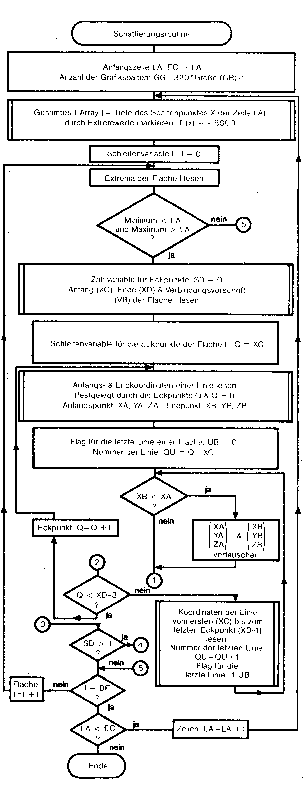
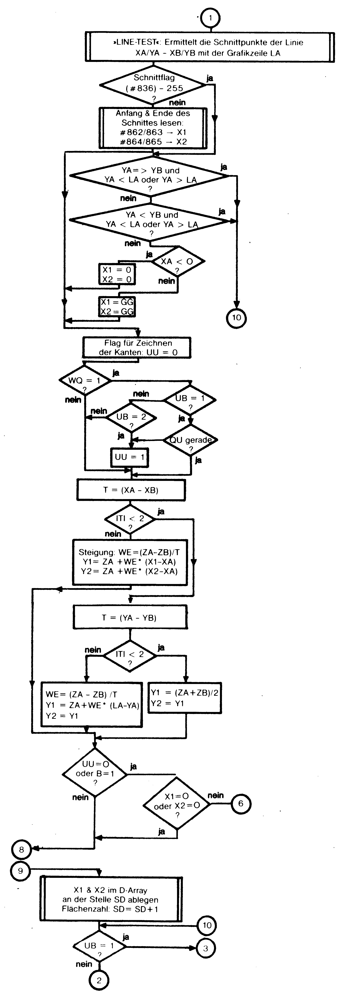
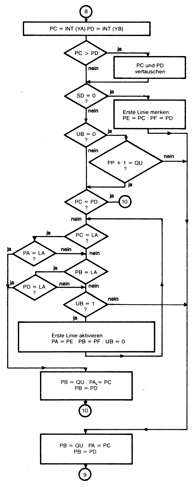
Wurde der »Line-Test« mit allen Randlinien durchgeführt und ist die Anzahl der Schnittpunkte ausreichend, so verzweigt das Programm über die Verbindungsstelle »11« zu einer weiteren Routine (Flußdiagramm 4). Hier werden zuerst die Schnittpunkte der Größe nach geordnet und dann mit jeweils der ersten und zweiten, der dritten und vierten Linie im Schattierungsraster verbunden. Deshalb müssen in einer geeigneten Schleife (Flußdiagramm 5) wieder die Tiefen sämtlicher Punkte dieser Linie berechnet werden. Liegt ein Punkt vor einem bereits in dieser Grafikspalte gezeichneten Punkt, wird in die Routine verzweigt, die nun endlich diesen Punkt setzen soll. Paradoxerweise ist diese Routine (Flußdiagramm 6) komplizierter als alle anderen Unterprogramme. Das kommt daher, daß alle Spezial- und Sonderfälle wie Schnittebene, Doppelmodi und schattierte oder einfache Hidden-Line-Darstellung berücksichtigt werden müssen. Gegebenenfalls wird dann der zuvor berechnete Winkel der Fläche aus dem Array geholt und damit das Schattierungsraster berechnet. Die gleiche Routine wird auch benutzt, um alle Randlinien einer Fläche einzuzeichnen. Die ganze Prozedur wird pro Zeile mit jeder Fläche wiederholt. Ist der Computer schließlich mit der letzten Grafikzeile fertig, hat man eine Grafik, deren unsichtbare Linien und Flächen wirklich vollkommen realitätsnah ausgeblendet sind.
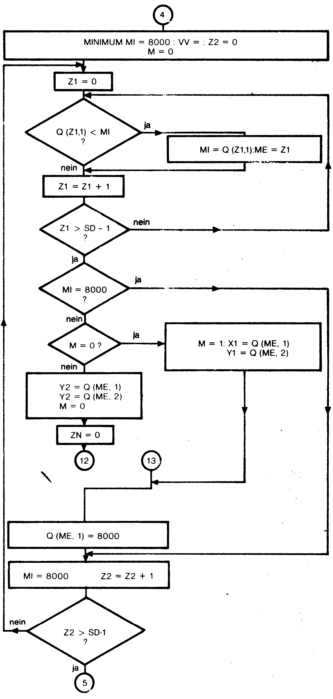
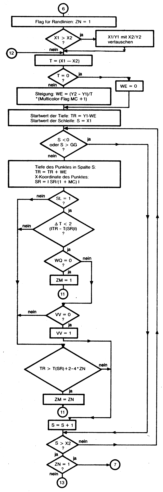
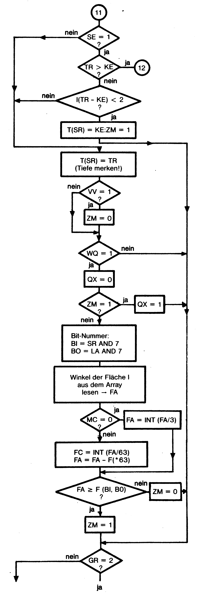
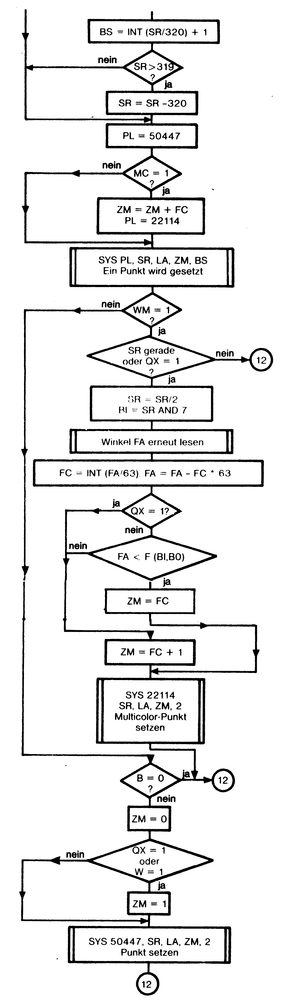
Mit den Hintergrundinformationen, die wir Ihnen hier mit auf den Weg gegeben haben, wünschen wir Ihnen viel Erfolg bei der Verwirklichung Ihrer eigenen 3D-Grafik-Ideen.
(S. Vilsmeier/S. Lippstreu/ah)******************************************************** * * * Source - Listing : Directory - Routine * * * ******************************************************** 10 -.EQ CHROUT = $FFD2 20 -.EQ CHKIN = $FFC6 30 -.EQ CHRIN = $FFCF 40 -.EQ CLRCHN = $FFCC 50 -.EQ NUMOUT = $BDCD 60 -.BA $C654 70 -DIR LDX #2 ; Eingabekanal 80 - JSR CHKIN ; definieren 90 - JSR CHRIN ; Startadresse LO-Byte und 100 - JSR CHRIN ; HI-Byte ueberlesen 110 -NXTFILE JSR CHRIN ; Linkadresse LO-Byte lesen 120 - LDA $90 ; Fehler-Check 130 - BNE END ; bei Fehler => Ende 140 - JSR CHRIN ; Linkadresse HI-Byte lesen 150 - BEQ END ; Linkadresse Null => Ende 160 - LDX $90 170 - CPX #$00 180 - BNE END 190 - JSR CHRIN ; Blocks LO-Byte holen 200 - LDX $90 210 - CPX #$00 220 - BNE END 230 - STA $FA ; zwischenspeichern 240 - JSR CHRIN ; Blocks HI-Byte holen 250 - LDX $90 260 - CPX #$00 270 - BNE END 280 - LDX $FA ; Blocks nach A/X 290 - JSR NUMOUT ; und ausgeben 300 -GIVOUT JSR CHRIN ; Programmnamen und Filetyp 310 - LDX $90 ; Zeichen 320 - CPX #$00 ; fuer 330 - BNE END ; Zeichen 340 - JSR CHROUT ; ausgeben 350 - BNE GIVOUT ; letztes Zeichen ? 360 - LDA #$0D ; ja => CR ausgeben 370 - JSR CHROUT 380 - JMP NXTFILE ; und naechstes File holen 390 -END JSR CLRCHN ; Eingabekanal ruecksetzen 400 - RTS ; und zurueck zu BASIC
********************************************************
* *
* Source - Listing : Hardcopy - Routine *
* *
********************************************************
10 -.EQ LINFLG = $033D
20 -.EQ XL = $14
30 -.EQ XH = $15
40 -.EQ SPALTE = $0341
50 -.EQ LIN1 = $0345
60 -.EQ LIN2 = $0347
70 -.EQ OFFSET = $0349
80 -.EQ MASKE = $0351
90 -.EQ BITNUM = $0354
100 -.EQ BYTE1 = $035E
110 -.EQ BYTE2 = $035F
120 -.EQ ROW1 = $0360
130 -.EQ ROW2 = $0361
140 -.EQ ROW = $0365
150 -.EQ BITLIN = $0368
160 -.EQ START = $036F
170 -.EQ GROESSE = $0370
180 -.EQ MODUS = $0371
190 -.EQ GETBYT = $B79B
200 -.EQ FACTOADR = $B7F7
210 -.EQ FRMNUM = $AD8A
220 -.EQ CHKOUT = $FFC9
230 -.EQ CHROUT = $FFD2
240 -.EQ CHKIN = $FFC6
250 -.EQ CHRIN = $FFCF
260 -.EQ CLRCHN = $FFCC
270 -.BA $C51B
******************* Komma - Check **********************
280 -CHKCOM JSR $0079 ; letztes Zeichen holen
290 - CMP #$2C ; Komma ?
300 - BEQ KOM ; ja
310 - JMP $AF08 ; ' ?SYNTAX ERROR
320 -KOM RTS ; Ruecksprung
***************** Illegal Quantity ********************
330 -ILLQUAN LDX #14 ; Fehlernummer
340 - JMP $A43A ; Ausgabe des Fehlers
********************* Hardcopy *************************
350 -HARDCOPY LDA #0 ; Variablen ruecksetzen :
360 - STA ROW1 ; Drucker-Hilfsbyte 1
370 - STA ROW2 ; Drucker-Hilfsbyte 2
380 - STA ROW ; Druckerbyte
390 - STA LINFLG ; Flag fuer letzte Zeile
400 - STA SPALTE ; Spalte 0-39
410 - LDX #$04 ; Kanal fuer Ausgabe
420 - JSR CHKOUT ; vorbereiten
430 - JSR $AEFD ; Zeilenoffset (320*Zeile)
440 - JSR FRMNUM ; aus BASIC-Text holen
450 - JSR FACTOADR ; in Adressformat wandeln
460 - LDA XL ; LO-Byte
470 - STA OFFSET ; speichern
480 - LDA XH ; HI-Byte
490 - STA OFFSET+1 ; speichern
500 - JSR CHKCOM ; Modus (Druckdichte)
510 - JSR GETBYT ; aus BASIC-Text lesen
520 - STX MODUS ; und speichern
530 - JSR CHKCOM ; Druckbeginn (1./2.Zeile)
540 - JSR GETBYT ; lesen
550 - STX START ; und abspeichern
560 - JSR CHKCOM ; Groesse (1 oder 2 Bilder
570 - JSR GETBYT ; nebeneinander ) lesen
580 - STX GROESSE ; und speichern
590 - LDA OFFSET ; Absolute Adresse in der
600 - STA LIN1 ; Bit-Map berechnen und
610 - LDA OFFSET+1 ; speichern:
620 - CLC ; 1. Zeile
630 - ADC #$A0
640 - STA LIN1+1
650 - LDA LIN1 ; 2. Zeile (fuer doppelte
660 - CLC ; Dichte)
670 - ADC #$40
680 - STA LIN2
690 - LDA LIN1+1
700 - ADC #$01
710 - STA LIN2+1
720 - LDA OFFSET ; letzte Zeile ?
730 - CMP #<(7680) ; Ueberpruefung notwendig,
740 - BNE NXTSP ; da sonst bei doppelter
750 - LDA OFFSET+1 ; Dichte eine nicht vor-
760 - CMP #>(7680) ; handene Zeile 26 mitge-
770 - BNE NXTSP ; druckt wuerde !
780 - LDA #$01 ; letzte Zeile => Flag
790 - STA LINFLG ; setzen
800 -NXTSP LDA #7 ; Bitposition im
810 - STA BITNUM ; jeweiligen Byte
820 -BITLOOP LDA START ; 'Bit-Zeile' in der je-
830 - STA BITLIN ; weiligen 8x8-Gruppe
840 -LINLOOP SEI ; Interrupt verhindern,
850 - LDA #$35 ; RAM selektieren
860 - STA 01
870 - LDA LIN1 ; Jeweilige Startadressen
880 - STA $FA ; der momentanen
890 - LDA LIN1+1 ; 8x8-Gruppen setzen
900 - STA $FB
910 - LDA LIN2
920 - STA $FC
930 - LDA LIN2+1
940 - STA $FD
950 - LDY BITLIN ; 'Bit-Zeile'
960 - LDA ($FA),Y ; Byte aus der 8x8-Gruppe
970 - STA BYTE1 ; holen und speichern
980 - LDA ($FC),Y ; Entsprechendes Byte aus
990 - STA BYTE2 ; der 2.Zeile (d. Dichte)
1000 - LDA #$37 ; ROM selektieren,
1010 - STA 01
1020 - CLI ; Interrupt wieder ein
1030 - LDY BITNUM ; Maske zum 'filtern' des
1040 - LDA BASE,Y ; Bytes holen
1050 - STA MASKE
1060 - LDA BYTE1
1070 - AND MASKE ; und Bit herausfiltern
1080 - BEQ NULL ; falls Bit gesetzt, ins
1090 - LDA ROW1 ; senkrechte Drucker-
1100 - SEC ; Hilfsbyte einbauen
1110 - JMP WEITER
1120 -NULL LDA ROW1
1130 - CLC
1140 -WEITER ROL
1150 - STA ROW1
1160 - LDA BYTE2 ; die selbe 'Filterung'
1170 - AND MASKE ; mit dem Byte aus der
1180 - BEQ NULL2 ; 2.Zeile wiederholen
1190 - LDA ROW2
1200 - SEC
1210 - JMP WEITER2
1220 -NULL2 LDA ROW2
1230 - CLC
1240 -WEITER2 ROL
1250 - STA ROW2
1260 - LDA MODUS ; bei doppelter Dichte
1270 - BEQ EINFACH ; muss 'Bit-Zeile' mit
1280 - INC BITLIN ; Step 2 erhoeht werden
1290 -EINFACH INC BITLIN ; naechste 'Bit-Zeile',
1300 - LDA BITLIN ; bis das entsprechende
1310 - CMP #$08 ; senkrechte Byte der
1320 - BCC LINLOOP ; 8x8-Gruppe komplett ab-
1330 - LDA ROW1 ; getastet ist
1340 - STA ROW ; senkrechtes Drucker-Byte
1350 - LDA MODUS ; einfache Dichte ?
1360 - BEQ OUTPUT ; ja => Byte ausgeben
1370 - LDA LINFLG ; letzte Zeile ?
1380 - BEQ OKAY ; nein => Bytes verbinden
1390 - LDA #0 ; Byte aus der imaginaeren
1400 - STA ROW2 ; Zeile 26 auf 0 setzen
1410 -OKAY LDA ROW1 ; die beiden senkrechten
1420 - CLC ; Drucker-Bytes zu einem
1430 - ASL ; verschmelzen, um den
1440 - ASL ; Ausdruck in doppelter
1450 - ASL ; Dichte bei einem Zeilen-
1460 - ASL ; vorschub von einem
1470 - CLC ; halben Punkt zu
1480 - ADC ROW2 ; ermoeglichen
1490 - STA ROW
1500 -OUTPUT LDA ROW ; Drucker-Byte holen
1510 - JSR CHROUT ; und ausgeben
1520 - LDA #0 ; Drucker-Bytes fuer den
1530 - STA ROW ; naechsten Durchlauf
1540 - STA ROW1 ; loeschen
1550 - STA ROW2
1560 - DEC BITNUM ; naechste 'Bit-Spalte' im
1570 - LDA BITNUM ; 8x8-Feld berechnen
1580 - BMI CHKSP ; 8x8-Gruppe ausgegeben ?
1590 - JMP BITLOOP ; nein => weitermachen
1600 -CHKSP LDA LIN1 ; Startadressen der neuen
1610 - CLC ; 8x8-Gruppe berechnen
1620 - ADC #$08 ; und speichern
1630 - STA LIN1
1640 - LDA LIN1+1
1650 - ADC #$00
1660 - STA LIN1+1
1670 - LDA LIN2
1680 - CLC
1690 - ADC #$08
1700 - STA LIN2
1710 - LDA LIN2+1
1720 - ADC #$00
1730 - STA LIN2+1
1740 - INC SPALTE ; ist die Zeile komplett
1750 - LDA SPALTE ; ausgegeben ?
1760 - CMP #40
1770 - BCS CHKGR
1780 - JMP NXTSP ; nein => weitermachen
1790 -CHKGR LDA GROESSE ; einfache Groesse ?
1800 - BEQ ENDE ; ja => fertig
1810 - LDA #0 ; nein => entsprechende
1820 - STA GROESSE ; Zeile des 2.Bildschirms
1830 - STA SPALTE ; ausgeben
1840 - STA ROW1
1850 - STA ROW2
1860 - STA ROW
1870 - LDA OFFSET
1880 - STA LIN1
1890 - LDA OFFSET+1
1900 - CLC
1910 - ADC #$E0
1920 - STA LIN1+1
1930 - LDA LIN1
1940 - CLC
1950 - ADC #$40
1960 - STA LIN2
1970 - LDA LIN1+1
1980 - ADC #$01
1990 - STA LIN2+1
2000 - JMP NXTSP
2010 -ENDE JSR CLRCHN ; Ausgabekanal ruecksetzen
2020 - RTS ; Ruecksprung zu BASIC
2030 -BASE .BY1,2,4,8,16,32,64,128
; Daten fuer die 'Filter'-
; Masken
*********************************************************
* *
* Source - Listing : Movie - Routine *
* *
*********************************************************
10 -.EQ GETBYT =$B79B
20 -.EQ ZYKLUS =$0341
30 -.EQ COLOR1 =$0345
40 -.EQ COLOR2 =$0347
50 -.EQ COLOR3 =$0349
60 -.EQ MODUS =$0351
70 -.EQ GESCHW =$0354
80 -.EQ ADRESSE =$035F
90 -.BA $C45C
100 -CHKCOM JSR $0079 ; letztes Zeichen holen
110 - CMP #$2C ; Komma ?
120 - BEQ KOM ; ja => OK
130 - JMP $AF08 ; nein => ' ?SYNTAX ERROR
140 -KOM RTS ; Ruecksprung
150 -ILLQUAN LDX #14 ; Fehlernummer
160 - JMP $A43A ; und Fehler ausgeben
********************** Parameter holen ******************
170 -MOVIE JSR CHKCOM ; auf Komma pruefen
180 - JSR GETBYT ; Wert holen
190 - CPX #$02 ; Bereich pruefen
200 - BCS ILLQUAN ; zu gross => ERROR
210 - STX ZYKLUS ; Wert fuer spaeter mer
220 - JSR CHKCOM ; das gleiche nocheinmal
230 - JSR GETBYT
240 - CPX #$02
250 - BCS ILLQUAN
260 - STX MODUS ; und Parameter speichern
270 - JSR CHKCOM ; nun werden die drei
280 - JSR GETBYT ; Multicolor-Farben aus
290 - STX COLOR1 ; dem Basic-Text gelesen
300 - JSR CHKCOM ; und gespeichert
310 - JSR GETBYT
320 - STX COLOR2 ; Farbe 2
330 - JSR CHKCOM
340 - JSR GETBYT
350 - STX COLOR3 ; Farbe 3
360 - JSR SET ; und Farben setzen
370 - LDA #126 ; Geschwindigkeit auf An-
380 - STA GESCHW ; fangswert (mittel) setzen
390 -MOV LDA #$18 ; HI-Byte der Adresse des
400 - STA ADRESSE ; ersten Bildes
410 - SEI ; Interrupt verhindern
*************** Film - Schleife vorwaerts ***************
420 -MLOOP LDA #$34 ; RAM selektieren
430 - STA $01
440 - JSR SHOW ; Bild darstellen
450 - LDA ADRESSE ; Adresse auf naechstes
460 -JUMP CLC ; Bild setzen
470 - ADC #$08
480 - STA ADRESSE
490 - CMP #$C0 ; Adresse = $C000 ?
500 - BEQ JUMP ; ja => ueberspringen, da
; im Bereich $C000 - $C7FF
; Farbspeicher und Movie-
; Routine liegen !
510 - CMP #$E0 ; letztes Bild ?
520 - BEQ END ; ja => Durchlauf beendet
530 - LDA #$37 ; ROM selektieren
540 - STA $01
******************* Joystick - Abfrage 1 ****************
550 - LDA #$10 ; Feuerknopf gedrueckt ?
560 - BIT 56320
570 - BEQ STOP ; ja => zurueck zu BASIC
580 - LDA #$08 ; Joystick rechts ?
590 - BIT 56320 ; ja => Geschwindigkeit
600 - BEQ PLUS ; des Films erhoehen
610 - LDA #$04 ; Joystick links ?
620 - BIT 56320 ; ja => Geschwindigkeit des
630 - BEQ MINUS ; Films verringern
******************** Warte - Schleife 1 *****************
640 -WAIT LDY GESCHW ; Warteschleife, der
650 -WA1 LDX #0 ; Geschwindigkeit ent-
660 -WA2 DEX ; sprechend lang
670 - BNE WA2
680 - DEY
690 - BNE WA1
700 - JMP MLOOP ; naechstes Bild darstellen
710 -STOP JMP RUECK ; Ruecksprung zu BASIC
720 -END LDA ZYKLUS ; Durchlauf zyklisch ?
730 - BNE REVMOV ; nein => Film rueckwaerts
740 - LDA #$18 ; ja => Adresse auf
750 - STA ADRESSE ; erstes Bild setzen
760 - SEI ; Interrupt verhindern
770 - JMP WAIT ; und weiter wie oben
*************** Geschwindigkeitsaenderungen 1 ***********
780 -PLUS LDA GESCHW ; Warteschleife ver-
790 - SEC ; kuerzen = Erhoehung der
800 - SBC #$05 ; Geschwindigkeit
810 - BCC UNDERFLOW
820 - STA GESCHW
830 - JMP WAIT ; und weiter wie oben
840 -UNDERFLOW LDA #$01
850 - STA GESCHW
860 - JMP WAIT
870 -MINUS LDA GESCHW ; Warteschleife ver-
880 - CLC ; laengern = Verringerung
890 - ADC #$05 ; der Geschwindigkeit
900 - BCS OVERFLOW
910 - STA GESCHW
920 - JMP WAIT ; und weiter wie oben
930 -OVERFLOW LDA #251
940 - STA GESCHW
950 - JMP WAIT
960 -REVMOV LDA #$D8 ; HI-Byte der Adresse des
970 - STA ADRESSE ; letzten Bildes
980 - SEI ; Interrupt verhindern
************** Film - Schleife rueckwaerts **************
990 -RLOOP LDA #$34 ; RAM selektieren
1000 - STA $01
1010 - JSR SHOW ; Bild darstellen
1020 - LDA ADRESSE ; Der gesamte Ablauf der
1030 -JUMP2 SEC ; Rueckwaerts-Schleife
1040 - SBC #$08 ; ist voellig analog zu dem
1050 - STA ADRESSE ; der Vorwaerts-Schleife.
1060 - CMP #$C0
1070 - BEQ JUMP2
1080 - CMP #$10
1090 - BEQ END2
1100 - LDA #$37
1110 - STA $01
******************* Joystick - Abfrage 2 ****************
1120 - LDA #$10
1130 - BIT 56320
1140 - BEQ RUECK
1150 - LDA #$08
1160 - BIT 56320
1170 - BEQ PLUS2
1180 - LDA #$04
1190 - BIT 56320
1200 - BEQ MINUS2
******************** Warte - Schleife 2 *****************
1210 -WAIT2 LDY GESCHW
1220 -WA3 LDX #0
1230 -WA4 DEX
1240 - BNE WA4
1250 - DEY
1260 - BNE WA3
1270 - JMP RLOOP
1280 -END2 JMP MOV
*************** Geschwindigkeitsaenderungen 2 ***********
1290 -PLUS2 LDA GESCHW
1300 - SEC
1310 - SBC #$05
1320 - BCC UNDERFLW
1330 - STA GESCHW
1340 - JMP WAIT2
1350 -UNDERFLW LDA #$01
1360 - STA GESCHW
1370 - JMP WAIT2
1380 -MINUS2 LDA GESCHW
1390 - CLC
1400 - ADC #$05
1410 - BCS OVERFLW
1420 - STA GESCHW
1430 - JMP WAIT2
1440 -OVERFLW LDA #251
1450 - STA GESCHW
1460 - JMP WAIT2
**************** Ruecksprung zu BASIC *******************
1470 -RUECK LDA #$37
1480 - STA $01
1490 - CLI
1500 - LDA #27
1510 - STA 53265
1520 - LDA #21
1530 - STA 53272
1540 - LDA #151
1550 - STA 56576
1560 - LDA #200
1570 - STA 53270
1580 - RTS
********* Bitmap und Farbspeicher initialisieren ********
1590 -SET LDA #$E0 ; Adresse der Bitmap
1600 - STA $FB
1610 - LDA #$00
1620 - STA $FA
1630 -LOP1 LDA #$0 ; Bitmap loeschen
1640 - LDY #$0
1650 -LOP2 STA ($FA),Y
1660 - INY
1670 - BNE LOP2
1680 - INC $FB
1690 - LDA $FB
1700 - BNE LOP1
1710 - LDA COLOR1 ; Farb-Byte aus den beiden
1720 - ASL ; COLOR1/COLOR2 - Nibbles
1730 - ASL ; zusammensetzen
1740 - ASL
1750 - ASL
1760 - ADC COLOR2
1770 - LDY #$00
1780 -LOOP STA $C000,Y ; und Farbspeicher fuer
1790 - STA $C100,Y ; Farben 1 und 2 initiali-
1800 - STA $C200,Y ; sieren
1810 - STA $C300,Y
1820 - INY
1830 - BNE LOOP
1840 - LDA MODUS ; HiRes-Modus ?
1850 - BEQ RET ; ja => fertig
1860 - LDA COLOR3 ; nein => COLOR3 setzen
1870 - LDY #$00
1880 -LOOP2 STA $D800,Y ; COLOR3-Farbspeicher
1890 - STA $D900,Y ; initialisieren
1900 - STA $DA00,Y
1910 - STA $DB00,Y
1920 - INY
1930 - BNE LOOP2
1940 - LDA #216 ; Multicolor-Bit setzen
1950 - STA 53270
1960 -RET LDA #59 ; auf Graphik-Schirm
1970 - STA 53265 ; umschalten
1980 - LDA #13
1990 - STA 53272
2000 - LDA #60
2010 - STA 56576
2020 - RTS
********************** Bild anzeigen ********************
2030 -SHOW LDA #$E7 ; Anfangsadresse des Movie-
2040 - STA $FB ; Windows ('Leinwand') in
2050 - LDA #$D0 ; der Bitmap
2060 - STA $FA
2070 - LDA ADRESSE ; Anfangsadresse des Bildes
2080 - STA $FD ; im Speicher
2090 - LDA #$00
2100 - STA $FC
2110 -SLOP1 LDY #$0 ; eine 8-Pixel-Zeile in die
2120 -SLOP2 LDA ($FC),Y ; Bitmap kopieren
2130 - STA ($FA),Y
2140 - INY
2150 - CPY #$A0
2160 - BNE SLOP2
2170 - LDA $FC ; Adresse auf naechste
2180 - CLC ; Zeile des Bildes im
2190 - ADC #$A0 ; Speicher setzen
2200 - STA $FC
2210 - LDA $FD
2220 - ADC #0
2230 - STA $FD
2240 - LDA $FA ; Adresse der naechsten
2250 - CLC ; Zeile in der Bitmap be-
2260 - ADC #$40 ; rechnen
2270 - STA $FA
2280 - LDA $FB
2290 - ADC #$01
2300 - STA $FB
2310 - CMP #$F6 ; letzte Zeile kopiert ?
2320 - BNE SLOP1 ; nein => weitermachen
2330 - RTS ; ja => Ruecksprung
2340 -.EN